ARCHITECTURE. CODE. BUILD. TRAIN.
Create DeepSeek
from scratch.
Understand, build, and train a DeepSeek-style large language model—from scratch.
Follow a token through DeepSeek. See how attention, memory, and experts work together. Then modify small pieces of the real code and test your predictions.
“I’ll just read one paper.”
Me, 23 references later:
The papers used in this course
These are the real first pages. Open a paper to read the source.
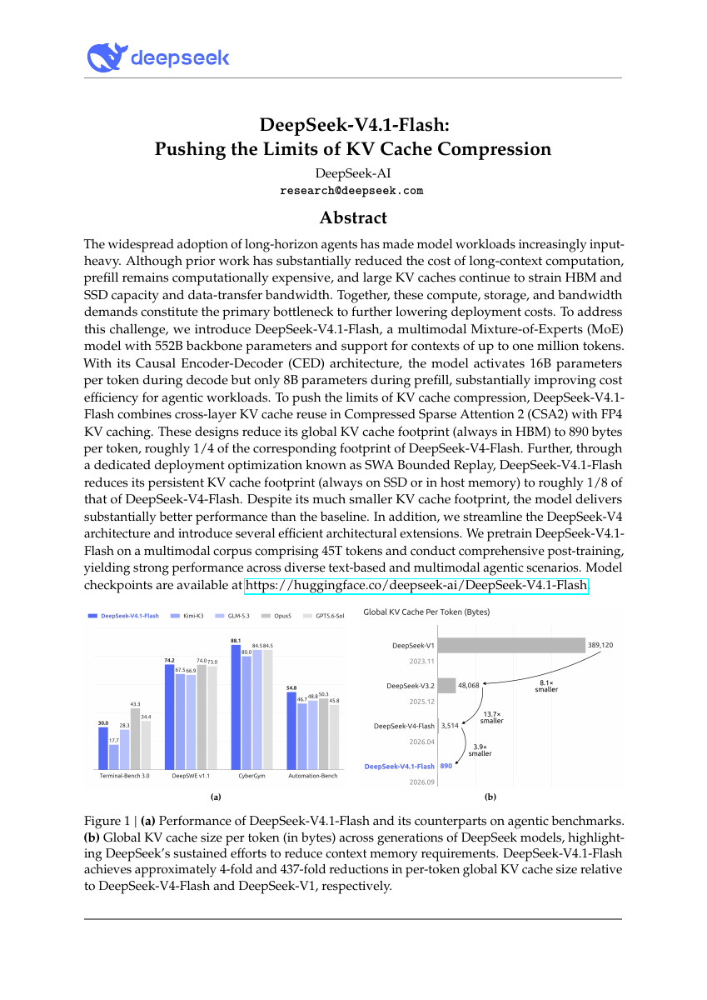
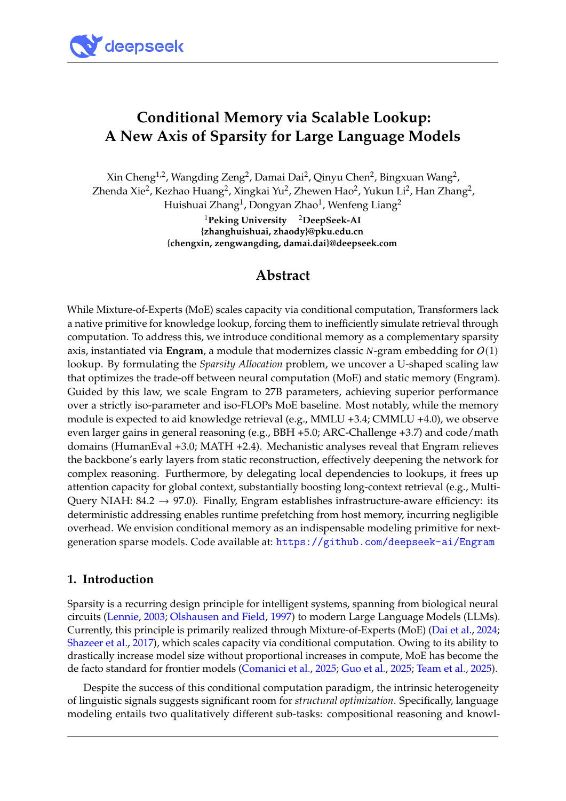
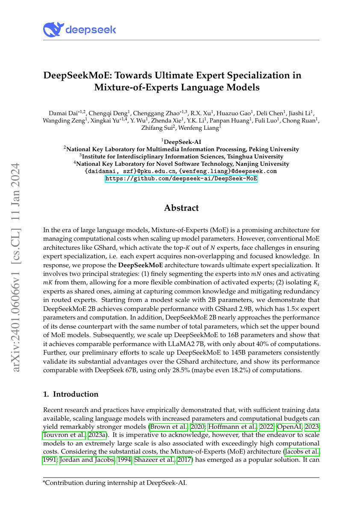
We build small educational implementations inspired by published DeepSeek mechanisms. The main path follows the V4.1 report through architecture, attention memory, expert routing, and Engram. A tiny trained baseline and runnable exercises accompany the theory. A preliminary SmolLM2 experiment compares task adaptation with n-gram memory and LoRA; full DeepSeek reproduction remains beyond this course.
Watch the course introduction
COURSE ROADMAP · THEORY FIRST
Understand the architecture, then test its design choices
Our backbone is the DeepSeek-V4.1-Flash technical report. Start with what each component does and what information it passes onward. Work through memory, attention, expert routing, and Engram with concrete examples. Then read a result from the paper and try the optional code and experiments. You can follow the theory without running a training job.
Optional practice: code and experiments already available
- Trace the NumPy attention implementation. Fixed random weights isolate the calculation.
- Inspect a real small training run. Code, synthetic dataset, settings, weights, loss curve, and samples are saved.
- Check caching correctness and measure storage. Runtime measurements are specific to this small CPU setup.
- Read the official packed-table code and fix an offset.
- Try the illustrative Engram lab. Its table examples are not trained model results.
Later chapters: planned, not implemented yet
- Training this architecture (§3.1.2, §4): attention-sharing training, data construction, and the training setup described in this report.
- Post-training and reasoning effort (§5): expand from the task-construction lesson into reward design and how the paper controls reasoning effort.
Our trained baseline uses a small synthetic command grammar. It does not reproduce DeepSeek’s training or establish natural-language performance. Paper results, illustrative examples, and our own measurements are labeled separately throughout the course.
01 / ARCHITECTURE
How DeepSeek’s main components work together
BEFORE THE WALKTHROUGH · WHAT DOES “MEMORY” MEAN HERE?
A KV cache saves the keys and values attention will read again
When generating another token, attention needs information from earlier positions. Instead of recalculating their keys and values at every step, we keep those vectors in a KV cache. It is temporary working storage for the sequence being processed.
The new token’s query scores the stored keys. Attention turns those scores into weights and combines the stored values. A key or value is a vector of numbers, not a saved sentence or a finished answer.
Is the encoder just building a cache?
The encoder does the computation first: attention and expert layers produce a contextual vector for each position. “Final hidden states” means the vectors after the encoder’s last layer, not just the final token.
This is the decoder’s global KV cache. The decoder also keeps separate local attention caches. Engram is different again: it retrieves learned vectors from model parameters, rather than caching keys and values calculated for this input.
Read or edit the video narration
Here is the architecture we'll unpack. It looks like a lot of boxes, so let's follow one job at a time.
Text enters through embeddings. Images take a separate vision path before joining the language model.
The encoder computes a vector for each position. We turn these vectors into the decoder's global keys and values: its K V cache.
Attention reads earlier context. DeepSeek combines local attention with compressed global memory, and shares that global memory across selected layers.
The mixture of experts routes each token to selected networks. We will examine how that routing works.
Engram adds learned memory for short token groups. Context controls how much that memory contributes.
At the output, D Spark drafts several future tokens. The main model verifies the draft before accepting it.
We won't build everything at once. First, follow our tiny attention model, understand its cache, and measure it. Then explore DeepSeek's changes.
This is the original DeepSeek V4.1 Flash architecture figure. Move through the four steps to see what each component does and where its output goes next.
Use this as the map for the course. For now, identify the jobs: process the input, read earlier context, retrieve extra memory, and produce output. We will unpack the equations and code in the relevant chapters.
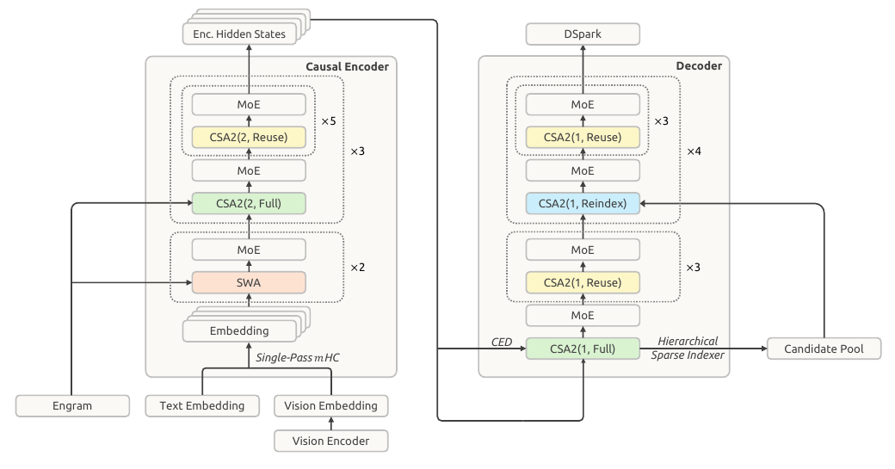
The encoder’s outputs become the decoder’s global KV cache.
The encoder processes the input through attention and expert layers. Its last layer produces a vector for each position. Learned projections turn those vectors into global keys and values that the decoder can read.
Input → encoder hidden-state vectors → decoder global keys and values.
Next, distinguish the information moving through this diagram: learned weights, temporary hidden states, and the keys and values saved for this input. We will use that distinction throughout the attention and Engram lessons.
Follow the information through the model →01A / MODEL INFORMATION FLOW
What information moves through DeepSeek—and where does it live?
A model answers one token at a time, but it does not keep every kind of information in the same place. Some numbers are learned once during training. Some are calculated for this request. Some are cached because the next token will need them. This distinction explains both DeepSeek’s CED architecture and why “memory” can mean several different things.
MAKE A PREDICTION
Predict which state changes when one prompt token changes
Choose an answer, then reveal the reasoning.
The model’s learned parameters stay fixed while it serves a request. Different input tokens produce different temporary vectors, so the KV cache for this sequence changes too. A trained Engram table stays fixed as well, although a different token sequence can address different rows and its current context can gate their contribution differently.
Identify four places where model information lives
The labels below describe different jobs. A vector is an array of numbers. It can participate in language behavior after training, but it is not a little sentence with a literal meaning stored inside it.
1 / TRAINED ONCE
Model parameters
Embeddings, attention projections, expert weights, and other learned weights are updated during training. At ordinary inference they are fixed. They specify how the model transforms an input; they are not a cache for this one conversation.
Persists across requests2 / COMPUTED NOW
Hidden states
Every layer computes a contextual vector for each token position. These temporary activations depend on this input and this position. A hidden state is a working representation used for the next calculation, not a word definition.
Exists for this forward pass3 / KEPT FOR THE NEXT TOKEN
Input-dependent global KV
Keys and values derived from this sequence let later queries read earlier context without rebuilding those entries. In DeepSeek V4.1-Flash CED, decoder global KV is projected from the final encoder hidden states.
Grows with this sequence4 / LEARNED, THEN LOOKED UP
Engram table
Engram is a learned conditional-memory module. Token n-grams choose addresses in learned embedding tables; the current hidden state controls how much the retrieved value contributes. It is neither the prompt’s KV cache nor a database of literal facts.
Parameters, addressed by inputSeparate prompt computation from decoder memory with CED
A conventional decoder-only transformer produces each layer’s KV from that layer’s own hidden states. The V4.1-Flash report describes a 20-layer causal encoder followed by a 20-layer decoder. For the decoder’s global attention, the KV entries are instead projected from the final encoder state using decoder-layer-dependent learned projections.
This is a conceptual data-flow diagram, not a claim that one vector has one human-readable meaning. The arrows show where tensors are computed and reused.
GLOBAL ATTENTION
The decoder can share global context
CED lets the decoder obtain global KV from encoder outputs during prefill. CSA2 can then share global KV and indexer keys across selected layers. Later layers still have their own queries, so sharing memory does not make their attention outputs identical.
LOCAL ATTENTION
Each layer still has separate local KV
Sliding-window attention needs keys and values derived from each layer’s current hidden state. The report calls this layer-wise local KV. Decoder SWA KV is separate from the global cache and is generated for decoding through bounded replay; it is not the same object merely stored in a different box.
ONE OPERATION · WORKED EXAMPLE + UNIT TEST
Turn an encoder output into a cache entry
The encoder produces a vector. That vector is not yet a key or a value. Learned projections turn it into numbers that attention can use. Here we isolate that one operation.
Start with one encoder output
h = [2, 3]
These are two features of one token’s state, not two different tokens.
Apply the key projection
K = 2 × 1 + 3 × 2 = 8
Our invented key weights are [1, 2].
Apply the value projection
V = 2 × (−1) + 3 × 1 = 1
Our invented value weights are [−1, 1]. The same input produces two different results.
Change one thing and predict the result
Now change the encoder output to [3, 3]. Keep the projection weights fixed. What are the new key and value?
Enter both numbers, then check.
See the Python unit test
These assertions check the worked input and the changed input. If an assertion fails, the function did not produce the expected result.
def make_cache_entry(h):
return h[0] + 2*h[1], -h[0] + h[1]
assert make_cache_entry([2, 3]) == (8, 1)
assert make_cache_entry([3, 3]) == (9, 0)The browser runs JavaScript calculations. The Python version is downloadable below.
Download all three Python examples and testsThe projection weights are learned parameters, fixed during this inference example. Cache entries depend on the input. These scalar K/V projections teach the idea; V4.1 uses larger, compressed representations and additional operations.
Follow an input from token IDs to decoder memory
Use the sequence [The, tide, rose]. These are teaching tokens, not actual tokenization and not a model prediction. The cards are a dependency walkthrough, not an exact execution schedule.
STEP 1 / INPUT BECOMES VECTORS
Look up learned token embeddings
The token IDs select learned embedding rows. The selected parameter rows persist across requests; the resulting vectors are new temporary states for this sequence. In the released implementation, rotary position information is applied later to attention components rather than simply added as a position-embedding vector here.
Identify what each tensor represents
“Tensor” is the general name for a shaped collection of numbers; a vector is one simple case. A hidden-state tensor can have a position axis and a feature axis. A KV cache adds storage for positions, layers, and heads. These shapes tell the program how to multiply, score, retrieve, and combine numbers. They do not give an individual coordinate a reliable literal label such as “the ocean feature.”
Why not say a hidden state “contains the meaning” of a token?
It is reasonable shorthand to say a state carries context relevant to later computation. But the model’s behavior comes from many numbers interacting through learned projections and nonlinear operations. Treating one state or one coordinate as a clean symbolic sentence overstates what the tensor representation guarantees.
Separate report facts from the teaching model
Report-specific: V4.1-Flash uses CED, has 20 encoder and 20 decoder layers, projects decoder global KV from the final encoder states, retains layer-wise local SWA KV, and integrates two Engram modules. Illustrative: our three-word sequence, visual cards, and compact labels are a simplified way to follow the flow. They do not expose a released activation trace or execute the production model.
Official report: §2.2 CED, p. 9 ↗ · §2.3.1 CSA2 and Figure 4, p. 10 ↗ · §2.4.2 Engram, p. 13 ↗ · §3.2.2 bounded replay, p. 20 ↗.
Next: see cached generation step by step →03 / ATTENTION AND MEMORY · THE MECHANISM
How generation reuses earlier keys and values
Read or edit this clip’s narration
Suppose our prompt is, the cat sat. We'll treat each word as one token and follow one attention layer.
The layer calculates a key and a value for each position. Attention uses keys to calculate weights, then combines the values.
Now we append, down. Do we need to calculate the first three keys and values again?
Look at cat, in position two. Causal attention lets this position read The and cat. It cannot read sat, which comes later.
After we append down, cat can still read only The and cat. Its token, its position, and the earlier tokens are all unchanged.
No earlier position gains a new allowed input. Its representation stays the same through the causal layers. With fixed weights, its keys and values stay the same too.
So we keep those three pairs in the K V cache, and calculate a new query, key, and value only for down.
The new query reads all four keys. Its attention weights combine all four values to produce the new attention output.
We reuse the old keys and values, but still read them. That is the work the cache saves.
Generation extends the sequence one token at a time. Re-running the full prefix would calculate earlier keys and values repeatedly. A KV cache keeps those tensors so each new query can read them again.
The old tokens have not changed
Focus on “cat,” the second token in our example. Before adding “down,” it can attend to “The” and “cat.” It cannot attend to “sat,” because that position comes later.
Appending “down” gives the earlier position no new information it is allowed to read. Its token and position also stay the same. With fixed model weights, the same allowed inputs give the same representation through the causal layers, so the earlier keys and values remain valid.
The same argument applies to the other old positions: “The” still sees only “The,” and “sat” still sees “The cat sat.” The new “down” position can see all four tokens, so it needs new computation.
The new query still reads all four key/value pairs in this full-attention example. We avoid recalculating the old pairs; we do not skip reading them.
Compute the prompt once, then keep its keys and values
For our three-token example [12, 37, 9], run causal attention and save K₀, K₁, K₂ and V₀, V₁, V₂. The last position’s output scores the next token. Processing the prompt is often called prefill.
FOLLOW ONE SEQUENCE · ILLUSTRATIVE TOKEN IDs
Read [12, 37, 9]
Save three keys and three values. The final prompt position produces scores for the next token.
Cache after this step: 3 positions.
This diagram follows the mechanism; it does not execute the model. Tokens 21 and 6 are chosen examples, not predictions from trained weights.
A new query reads old and new memory
Suppose the next token is 21. At position 3, compute its query, key, and value. Append the new key and value to the cache. Its query attends to keys and values at positions 0 through 3, producing scores for the following token.
The earlier keys and values are reused, but attention still reads them. Caching removes repeated work; it does not make the attention step independent of context length.
Caching should preserve the calculation
With the same fixed weights, token sequence, and position IDs, the cached and full-prefix paths should produce matching next-token scores within numerical tolerance. Test this before trusting performance measurements.
Our one-layer example has one pair of K/V tensors. A conventional multilayer transformer caches keys and values for each attention layer. Later we will examine DeepSeek’s changes to their size and ownership.
We now know what the cache stores and why it grows. Next, compare three ways to change attention: store a smaller representation, share memory across layers, or read fewer entries. The optional cache experiment later in the course measures the ordinary caching behavior we just explained.
Compare three attention design choices →BETWEEN CACHE AND SHARING / THREE DESIGN CHOICES
How CSA2 compresses, shares, and selects attention memory
When generation adds a token, the cache avoids rebuilding earlier keys and values. Long contexts still make the cache large, and reading every old entry can still be costly. DeepSeek-V4.1-Flash’s CSA2 separates three choices that are easy to mix up.
Compress changes the representation or number of global entries. Share changes which layers keep the same global memory. Select chooses addresses to read from memory that already exists. These are teaching categories, not a quotation of the report’s formal taxonomy; CSA2 combines several mechanisms. None proves an answer-quality or latency improvement on its own.
Follow one change at a time
Each tab isolates one change against the same baseline: 8 earlier positions, 4 layers, and 2-byte toy numbers. It is a counting aid, not DeepSeek’s released cache layout or a benchmark.
BASELINE / STORE AND READ EVERYTHING
Four layers each keep a full global cache.
Each layer stores 8 positions as a toy K-and-V pair: 8 × 2 vectors × 8 values × 2 bytes = 256 bytes. Four independent owners store 1,024 bytes. Each query reads all 8 global positions.
Nothing yet. This gives the reference count for the three choices.
Storage counts show only this toy global cache. They exclude local-window KV, indexer keys, scales, allocator padding, weights, and computation. “Entries read” counts candidate global memory entries, not wall-clock time.
CHOICE 1 / COMPRESS THE GLOBAL MEMORY
Store a compact latent instead of a full key-and-value pair per position
A normal cache can carry a separate key and value vector for every position in every layer. At long context lengths, the number of positions multiplies a wide representation.
CSA2 has an explicit compressor. With a compression ratio above 1, the reference implementation pools consecutive token representations using learned, channel-wise softmax gates; at ratio 1 it uses a normalized projection without pooling. The report says V4.1’s encoder CSA2 uses ratio 2, while its decoder CSA2 uses ratio 1. So “compressed attention” does not mean every V4.1 global entry represents two tokens.
toy dense pair: 2 vectors × 8 values × 2 B = 32 B / position
toy latent entry: 1 vector × 8 values × 2 B = 16 B / position
if 2 positions → 1 entry: 16 B / 2 source positionsWhat it changes: stored representation and, when pooling is used, entries per source position. What it does not decide: how many layers own that memory or how many entries attention reads. The trade-off is information bottleneck: a pooled entry must carry useful information about its source positions, and the model has to learn that representation.
Why this is not a generic MLA claim
This lesson describes the V4.1 CSA2 report and its released reference model. MLA, CSA, and other DeepSeek versions use related vocabulary but have different layouts and schedules. Do not transplant this toy equation or V4.1’s ratio schedule into another architecture.
CHOICE 3 / SELECT BEFORE READING
Use an indexer to choose a small global read set
Sharing a cache reduces duplicate storage, but a query facing a million global entries would still have an enormous set to score and read. Cache bytes alone do not tell us this reading cost.
1 2 3 4 5 6 7 8indexer
scores addresses→Top-K read set
2 · 5 · 8→main attention
combines selected values
CSA2’s lightweight indexer scores global entries using indexer queries and keys, then returns Top-K addresses. Main attention reads those selected global entries together with local SWA KV. Reindex can make a fresh Top-K list from shared memory; Reuse can keep the preceding compatible list. The addresses are not the attention weights or the layer output.
toy global memory stored: 8 entries (unchanged)
toy global entries read by main attention: 8 → Top-3
V4.1 report configuration: Top-512 global entries per queryWhat it changes: the global entries supplied to main attention for that query. What it does not automatically change: global storage; the candidates still exist in the cache. The trade-off is retrieval error: a useful entry outside Top-K is unavailable to that attention read. The report’s hierarchical indexer further limits where later decoder indexers search, but the first Full-mode decoder indexer still scans the causally visible global context.
Why “fewer reads” is not a measured speedup here
A smaller read set is an algorithmic count, not a latency claim. Actual speed depends on kernels, hardware, cache layout, sequence length, candidate gathering, and the rest of the model. The report provides its own system results; this lesson does not infer a speedup from the toy counts.
The useful token didn’t make Top-K.
Attention: “Where did it go?”
You read 3 entries. How many remain stored?
Our toy cache holds 8 entries. The indexer selects 3 for this query. We have not compressed or evicted anything.
Choose an answer to see the explanation.
PUT THE THREE KNOBS TOGETHER
One sentence per mechanism
- Compress
- Make each global memory item smaller, and sometimes make fewer items for the same source positions.
- Share
- Keep one compatible global memory item for several layers instead of one copy per layer.
- Select
- Give attention a small set of global addresses to read for the current query.
The research question is empirical: under matched training and evaluation, how do these restrictions affect quality, memory, and throughput? Byte arithmetic explains a mechanism. It does not answer that question.
Primary source: DeepSeek-V4.1 technical report §2.3, Figure 4, and Figure 5 ↗ · released reference model ↗
There is another storage choice inside each cache entry: how precisely to store each number. Next, see why V4.1 uses four-bit storage for its main cache.
Explore FP4 cache precision →V4.1 PAPER · §2.4.4 · MAIN KV CACHE
How DeepSeek stores its main KV cache in four-bit numbers
We have changed how many memory entries exist and which layers share them. There is another question: how many bits do we spend on each number inside an entry? A long sequence contains so many cached numbers that saving a few bits per number can add up.
Same number of entries. Fewer bits per value.
Imagine one small block containing 16 cached values. Using eight bits per value takes 128 bits, or 16 bytes, for those values alone. Four bits per value takes 64 bits, or 8 bytes. Two four-bit values fit inside one byte.
This compares raw 8-bit value data against the illustrated four-bit block plus its scale. It is not a complete comparison of two production cache layouts: the 8-bit format may need its own metadata, and an implementation may add alignment or padding.
Four bits cannot preserve every original value
Four bits provide 16 bit patterns. A stored code chooses from a small set of representable values. An original value between two choices must be rounded. Reading the code later recovers the rounded value, not the discarded detail.
Here we assumed a scale of 1. The difference is −0.2. That error matters because attention uses these cached values in later calculations. Smaller storage is useful only if the resulting model still performs well.
The code chooses a level; the scale sets its size
Instead of letting the code stand for a fixed value, multiply it by a scale shared by a group of values. A scale of 0.5 turns the level 3 into 1.5. A scale of 2 turns it into 6. This lets the same small codebook cover different ranges.
A larger scale reaches larger magnitudes, but the spacing between neighboring values also grows. A smaller scale gives finer spacing near zero, but its largest representable magnitude is smaller. Values beyond that range are clipped. One scale must work for the whole block.
Move a value and watch what survives storage
We use the E2M1 value levels with a manually chosen scale. This demonstrates rounding; it does not run DeepSeek’s scale-selection kernel or measure model quality.
Gold marker: original value. Blue ticks: representable values. Green tick: selected value.
Which values can E2M1 represent?
Before scaling, its nonnegative magnitudes are 0, 0.5, 1, 1.5, 2, 3, 4, and 6. The sign bit allows negative values too. Positive and negative zero use two encodings, so the 16 bit patterns represent 15 distinct numerical values. Our visual merges the two zeros. Exact midpoint ties in this teaching widget choose the lower numerical value; hardware rounding rules can differ.
What V4.1 changes—and what it keeps at higher precision
The report uses one E4M3 scale per 16 channels, without NVFP4’s second-level global scale. That is 4 bits per value plus 8 scale bits shared across 16 values: 4.5 bits per value before layout overhead.
Both positional and non-positional components use this format. Cached values are dequantized before attention; storing four-bit values does not mean every attention operation uses four-bit arithmetic.
The local sliding-window cache stays FP8 because the paper reports greater sensitivity to quantization. The main and local branches make different precision choices.
The authors introduce quantization-aware training during post-training. The model can adapt to quantization effects; changing a cache format after training is a different experiment.
Why can they omit the second-level global scale?
The paper compares the format’s available magnitude range with the cache values it needs to store. It reports observed magnitudes around 10, well inside the available range. That supports omitting this scale in their design; it does not remove rounding error or guarantee the same choice works for arbitrary tensors.
Is “half the bits” the same as “twice as fast”?
The cache takes less space, but attention still has to read it, reconstruct values, and do the rest of its work.
Reveal the answer
No. Reduced storage can help memory capacity and data movement. Runtime also depends on dequantization, kernels, hardware, and the workload. The report describes this main-KV change as a storage optimization. A speed claim needs an actual timed comparison.
Source: DeepSeek-V4.1-Flash, §2.4.4: FP4 Main KV Cache. The browser arithmetic is an illustrative calculation, not a reproduction benchmark. Source and calculation notes.
We have reduced the bits inside each entry. Next, return to the separate question of how several layers can share global memory while computing different outputs.
Continue to cross-layer cache sharing →05 / SHARING MEMORY
How layers share the attention cache
Read or edit this clip’s narration
We just reused a cache across generation steps. Now let's reuse a global cache across layers.
Normally, each attention layer stores its own keys and values. Three layers means three separate caches, with potentially different contents.
As the sequence grows, every separate cache takes more memory. So can selected layers read from one shared global cache?
But those layer caches are not identical. Deleting two caches from an existing model can change its answers. Instead, we design the layers to share memory, and train the model with that design.
DeepSeek's C S A two is designed for this. Within a sharing group, one layer builds the global cache. Later layers reuse it.
They don't copy its output. Each layer computes its own query, which can assign different attention weights to the shared entries.
And each layer still keeps its own local cache. Only the global cache is shared in this example.
Here is the paper's diagram. Main K V is the global cache. Main Q and S W A K V are calculated separately in each layer.
So sharing reduces global cache storage. It does not remove the later layers' attention computation.
In a conventional transformer, each attention layer maintains its own keys and values. DeepSeek’s CSA2 lets groups of layers share global memory. A later layer can select different entries, or reuse the previous selection.
The distinction matters: sharing a cache does not mean sharing the attention output. Each layer still computes its own main query and keeps its own local sliding-window cache.
Earlier short explanation · optional
Train layers to share; do not assume their caches match
Across generation steps, earlier causal states stay unchanged, so their stored keys and values can be reused. Across layers, the vectors can differ. Replacing a later layer’s own cache with an earlier one changes its inputs and can change the model’s answers.
DeepSeek builds sharing into CSA2 and trains with that architecture. Later layers learn to use shared global memory while keeping their own queries and local caches. This is a model design choice, not an exact shortcut for any existing trained transformer.
Could we prove model quality just by counting saved bytes?
No. Cache size tells us how much memory is stored. To assess answer quality, we need a trained model and evaluation data. The interactive examples here explain the mechanism; they do not measure DeepSeek’s quality.
How Full, Reindex, and Reuse layers use shared memory
Click through the modes. Follow what changes—and what stays shared.
A Full layer constructs global KV and indexer keys, then chooses which entries its query will attend to.
Illustrative entries and sequence. Modes are assigned to layers in advance; the network has multiple sharing groups.
Source: §2.3.1 and Figure 4 ↗
Why can the output change if the memory stays the same?
The query determines the attention weights. Different layer-specific queries can give different weights to the same keys and values. The local attention entries are also layer-specific. Reusing memory or selected indices therefore does not force the output vectors to be identical.
06 / INDEXER AND ATTENTION
How the indexer selects entries before attention reads them
We now know how layers can read shared memory. But a long context can contain far more entries than we want attention to read at once. The next job is to select a smaller set.
Read or edit the video narration
Sharing memory saves storage. But the model still needs to decide which parts to read.
That’s where the indexer comes in: it selects a smaller set of entries for attention to use.
Selecting the entries and computing attention over them are two separate steps.
Now the difference between Reindex and Reuse becomes clearer.
Reindex makes a fresh selection from the shared memory.
Reuse keeps the previous selection, but the layer still performs its own attention computation.
Reusing the selection does not mean copying the previous layer’s answer.
Reading the numerical example on screen
The entries change from 2, 5, 7 to 1, 4, 8 at Reindex. Reuse keeps 1, 4, 8. Two different main queries then produce different attention weights over those same entries.
The displayed weights and outputs are calculated from a tiny dot-product attention example. They are not measurements from DeepSeek. The diagram isolates the global branch; the real layer also has its own local KV.
For reproducibility: keys = [[2, 0], [0, 2], [1, 1]], values = [[1, 0], [0, 1], [0.5, 0.5]], queries A = [0, 1] and B = [1, 0]. We compute softmax(QKᵀ / √2), then multiply by V.
Source: §2.3.1 and Figure 4 ↗
The indexer returns addresses
Imagine eight cached entries. The indexer chooses entries 1, 4, and 8. Those three numbers tell attention where to read. They are not the attention output.
8 cached entries → indexer → [1, 4, 8]ONE OPERATION · WORKED EXAMPLE + UNIT TEST
Use indexer scores to retrieve the right rows
The indexer scores cache positions, but attention needs the values at those positions. A small implementation mistake is to pass the scores onward instead of retrieving the rows.
Score four cache positions
Position: 0 1 2 3 Score: 0.2 0.9 0.1 0.8
Keep the two positions with the highest scores. We use zero-based positions, as in Python.
Keep the positions, not the score values
Selected positions = [1, 3]
The selected scores are 0.9 and 0.8. Those are not row addresses.
Retrieve values at those positions
Values: [10, 20, 30, 40] Read: [20, 40]
Attention can now combine these selected values using its own attention weights.
Change one thing and predict the result
Raise the score at position 0 to 0.95. Keep all other scores and values unchanged. Which two values are now retrieved, in descending score order?
Enter both numbers, then check.
See the Python unit test
These assertions check the worked input and the changed input. If an assertion fails, the function did not produce the expected result.
def select_values(scores, values, k=2):
ids = sorted(range(len(scores)),
key=lambda i: (-scores[i], i))[:k]
return [values[i] for i in ids]
assert select_values([.2,.9,.1,.8], [10,20,30,40]) == [20,40]
assert select_values([.95,.9,.1,.8], [10,20,30,40]) == [10,20]The browser runs JavaScript calculations. The Python version is downloadable below.
Download all three Python examples and testsThis example isolates selecting and gathering global-cache rows. Values are scalars only to make the indexing visible. It does not implement DeepSeek’s learned indexer or the subsequent attention calculation. Ties use lower position first.
Attention combines the selected values
The main query scores the keys at those addresses. The resulting attention weights determine how much each value contributes. A later layer can reuse [1, 4, 8] and still produce a different weighted sum with its own query.
Query + keys at [1, 4, 8] → weights
Weights × selected values → attention outputThis diagram isolates global memory. The real layer also reads its own local cache.
Check yourself: Reuse keeps [1, 4, 8]. Does it copy the output?
No. It reuses the addresses. The layer still calculates attention with its own query. Reindex goes one step further and chooses fresh addresses.
We reduced the number of entries attention reads. But finding those entries can still require a search across the whole context. Next, we reduce that search.
How the indexer narrows its search →07 / HIERARCHICAL INDEXING
How block selection narrows the entries searched by later layers
Selecting 512 entries sounds cheap. But if every layer first scores a million entries to find them, selection itself becomes expensive. DeepSeek limits where later indexers search.
Read or edit the video narration
Selecting a few entries does not make the search cheap. The indexer could still score the whole context.
In DeepSeek’s decoder, the first Full layer scans every visible global position.
It groups positions into blocks, scores each block by its highest score, and builds a candidate pool from the winning blocks.
Later Reindex layers search only this pool, each choosing its own top five hundred and twelve entries.
The pool is bigger than the final selection, so different layers can choose different entries.
The later searches are bounded by the pool size. But the first full scan still happens.
This restriction is used during training too, so the later indexers learn under the same constraint.
What is shared—and what is still searched?
The candidate pool is built for each query by the decoder’s first Full-mode layer. It includes every position in the selected blocks, rather than just that layer’s highest-scoring individual entries. Later Reindex layers can therefore choose different final Top-512 sets within the same pool. Reuse layers skip new indexing.
The paper gives an example of 2,048 selected blocks with 8 positions each: 16,384 candidate positions. This is larger than a final set of 512 entries. The animation instead uses 24 → 8 → 3 so that you can follow the entries.
Only the later indexers have a search size bounded by the fixed candidate pool. The initial Full layer still scans the causally visible global context. This does not make every operation in the model constant-cost.
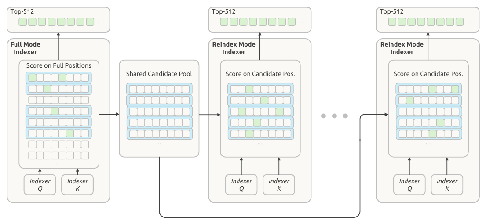
Source: §2.3.2 and Figure 5 ↗
24 positions → 8 candidates → 3 selected entries
First scan: group 24 positions into six blocks of four. Score each block using its highest-scoring position, then keep two blocks. All eight positions in those blocks enter the candidate pool.
Full context: [1–4] [5–8] [9–12] [13–16] [17–20] [21–24]
Winning blocks: [5–8] [17–20]
Candidate pool: 5 6 7 8 17 18 19 20
Later layer A: 5 7 18
Later layer B: 6 19 20Later searches: each Reindex layer scores only those eight candidates and chooses its own three entries. The two example selections above are illustrative, not measured model outputs.
The trade-off: an entry outside the pool cannot be selected by those later indexers, even if it would have been useful. The model must learn to work with that restriction.
Check yourself: does this remove the first full scan?
No. Building the candidate pool still needs the first scan. The saving comes from restricting later searches to a smaller pool.
We have followed how attention chooses information from this input. Next, see what happens when a later conversation turn finds the global cache but its local cache is missing. Then we will switch from attention to expert routing.
Follow a missing local cache →V4.1 PAPER · §2.2 · §3.2.1–3.2.2 · DEPLOYMENT TRADE-OFF
Why DeepSeek rebuilds part of a cache instead of saving everything
A cache miss does not have to mean “start the whole conversation again.” DeepSeek-V4.1-Flash keeps the long-lived part that is useful across turns, then rebuilds a small local state when it is missing. The report attributes a persistent-cache footprint around one eighth of V4’s to removing persistent SWA KV and further compressing global KV. The rebuild is a deliberate approximation—not ordinary exact KV caching.
Global context can be useful when a later turn refers back to an old tool result or document. V4.1 keeps this cache persistently so a matching prefix can be reused.
Sliding-window attention needs nearby layer-wise keys and values. They are valuable while a session is active, then quickly lose their reuse value after a turn or session ends. Section 3.2.1 places them in a separate distributed host-DRAM pool with a minutes-scale TTL: absent from persistent storage, not absent everywhere.
Appending a token can preserve ordinary causal cache entries exactly
In a standard causal transformer, an old position cannot attend to a newly appended future token. With fixed weights, token IDs, and positions, its allowed inputs do not change. Its old key and value therefore remain valid. Reusing those entries is an exact-in-principle equivalence to recomputing the full prefix, subject to normal numerical tolerance.
This fact does not say that every way of restoring a multi-layer local cache is exact. A local key/value at an upper layer depends on hidden states beneath it. Those lower-layer states can themselves depend on an earlier local window. Dependencies accumulate through the stack.
A local window has a deeper theoretical reach through layers
Let L be the number of layers and nwin the SWA window. The report says exact reconstruction of the SWA KV for all layers requires replaying the most recent L × nwin tokens. Each layer can pass information one local window farther back, so keeping only one window of input does not, by itself, recreate the same stacked states.
Why accept the shorter path? The paper cites prior work indicating SWA’s effective receptive field can be much smaller than the theoretical nwin × L/2 decoder reach. That is motivation and an empirical hypothesis, not a proof that one local window exactly reconstructs every model state.
Follow one prefix through save, reuse, replay, and continuation
This toy uses an eight-position prefix, four local layers, and a selectable replay segment. Its numbers are not DeepSeek settings or a measurement. An exact recovery would replay the smaller of the available prefix and the theoretical stacked span. The widget only exposes what persists, what is recomputed, and what the bounded pass intentionally leaves out.
The toy local window equals the selected segment, so shorter choices make the replay boundary more visible.
1 / SAVE THE FIRST TURN
The prefix creates global and local state.
A completed prefix produces global KV plus local SWA KV. The local part can serve the active conversation, but is not chosen for long-lived persistent storage.
Reuse global KV; regenerate only the local state that is missing
For an encoder cache hit with missing encoder SWA KV, the system replays the last nwin tokens of the cached prefix together with the uncached suffix. The replayed prefix regenerates only SWA KV. Its cached global KV is reused without recomputing or overwriting it; the new suffix produces both global and local KV.
The consequence is precise: replayed prefix state is approximate, and global and SWA KV for the new suffix can depend on where the cache hit occurred. The report says its experiments found negligible response-quality degradation, while also stating that these states are not mathematically identical across cache-hit positions.
Build decoder SWA KV for decoding, not for prefix persistence
CED lets decoder global KV be projected from final encoder hidden states. Decoder SWA KV is different: each decoder layer derives it from that layer’s own hidden states, and the first decode steps need it. V4.1 does not cache decoder SWA KV. At every prefill, it feeds the last nwin prompt tokens’ encoder outputs through the decoder under the same local truncation and keeps the resulting decoder SWA KV only for decoding.
That decoder reconstruction is also explicitly non-equivalent to a full decoder forward pass. The authors report negligible response-quality impact and say they simulated the replay during post-training so the model could adapt to it.
Does a sliding window make bounded replay exact?
A later layer’s local key/value can depend on a lower layer that reached beyond the replay boundary.
Reveal the answer
No. Ordinary causal caching can exactly reuse already computed entries. Bounded replay deliberately cuts off local attention before the replay start, so it approximates a stacked SWA state. Its case is empirical: the report finds negligible degradation in its tested settings, but warns approximate state reconstruction can still cause degradation in untested boundary cases.
Sources: DeepSeek-V4.1-Flash §2.2: Causal Encoder-Decoder; §3.2.1–3.2.2: persistent KV management and SWA Bounded Replay. Source and scope notes.
Global cache sharing, FP4 storage, and bounded local replay address different costs. Together they reduce stored state, but each has its own correctness and quality boundary.
08 / EXPERT ROUTING
How V4.1 routes tokens through experts
V4.1-Flash uses Mixture-of-Experts (MoE) layers to increase available feed-forward capacity without asking every token to run every feed-forward network. The saving is selective computation, not a promise that every selected expert has a human-readable subject.
01 / WHY SPARSITY EXISTS
See how sparse routing limits per-token work
A dense Transformer layer sends every token through one large feed-forward network (FFN). An MoE layer stores many smaller FFNs, called experts, and a router selects a small subset for each token. An expert is a learned FFN with weights and nonlinearities. It is not a person, and selection does not guarantee a stable label such as “the math expert.”
Every token uses the same feed-forward weights.
The router can choose different routed experts for different tokens.
Parameter counts answer “how much is stored.” Activated parameters and FLOPs answer part of “how much arithmetic this token asks for.” Neither alone measures end-to-end latency.
02 / FOLLOW ONE TOKEN
Trace one token through routing and combination
At an MoE layer, a token already has a hidden-state vector h. The router scores the routed experts from h, keeps the top k, runs those FFNs, and adds their weighted outputs. This happens token by token; neighbouring tokens can take different routes.
- 1Hidden stateone vector for this token
- 2Router scoresone score per routed expert
- 3Top-k selectiononly selected routed FFNs run
- 4Weighted sumcombine their outputs
What does “weighted” mean?
If experts A and C are selected with weights 0.7 and 0.3, their outputs contribute as 0.7 × A(h) + 0.3 × C(h). The exact scoring function and whether top-k weights are normalized are model details. Do not silently assume a softmax or normalized weights.
03 / INTERACTIVE TOY ROUTER
Choose a toy token and follow each calculation
This is a fixed, two-dimensional teaching example: four routed experts, top-2 selection, and explicitly normalized toy weights. It is not learned, measured, or extracted from DeepSeek-V4.1-Flash. The toy FFN outputs stay fixed across the choices so you can isolate the routing arithmetic; real FFN outputs also depend on their input state.
Router raw scores
Top-2 selected by score. In this toy, their selected scores are divided by their sum.
Selected paths
Weighted output
Predict before changing the token
Will the same experts always win? No. The router receives the token’s current hidden state, which has been shaped by its surrounding context and prior layers. The labels here are just names for four toy FFNs, not evidence of real expert identities.
04 / WHAT V4.1-FLASH SPECIFIES
Identify the shared and selected routed FFNs
The V4.1-Flash report’s §4.2.1 architecture configuration says each MoE layer has 1 shared expert and 384 routed experts; 6 routed experts activate for each token. The accompanying official reference implementation makes the intended composition concrete: it sums the weighted outputs of selected routed FFNs, then adds the shared FFN output for every token.
The official reference implementation uses correction biases to help choose experts, while retaining the original scores as output weights. It also has separate correction biases for image-span tokens. The report’s §2.1.1 multimodal routing section describes modality-specific bias updates to balance image and text loads separately during training.
V4.1’s Causal Encoder–Decoder makes prefill and decode different execution modes. The report gives 552B backbone parameters, 8B activated parameters per prefill token, and 16B per decode token for the full architecture. Those figures are not only this MoE layer and should not be reverse-engineered from “6 of 384.”
05 / THE FAILURE MODES
Check whether compute savings fix the bottleneck
Routing imbalance
If too many tokens choose the same few experts, those experts become overloaded while others idle. A batch may wait for the crowded path. Load balancing tries to spread use; it does not make every token equally expensive.
Communication and dispatch
When experts are distributed across devices, tokens may need to be grouped, sent to the right device, computed, and returned. Those transfers and synchronization can matter to wall time.
Capacity is not a semantic guarantee
Even if routes correlate with patterns in analysis, the experts are trained jointly and can change roles. A route is a numerical decision, not a certified domain assignment.
Twelve tokens. Four experts. One very busy expert.
This toy routes each token to one expert so the workload is easy to count. V4.1 selects six routed experts per token; this is only an illustration of uneven load.
Both examples assign 12 tokens. Changing the distribution is not a measured speedup or an implementation of DeepSeek’s balancing algorithm. In the paper, text and image tokens have separate correction biases for selection; original routing scores still weight the outputs.
384 experts available.
The router watching every token choose the same six.
Check yourself: does sparse routing guarantee lower latency?
No. It can reduce the amount of expert arithmetic for a token, but latency also depends on batching, routing balance, kernel efficiency, device placement, memory traffic and communication.
MoE changes how the feed-forward computation is allocated. It does not replace attention, KV-cache design, or the rest of the Transformer system. Next: how residual streams are mixed between blocks →
Sources and claim boundaries: see expert-routing-sources.md. The V4.1 configuration claims come from the saved DeepSeek-V4.1-Flash report and official reference implementation; all four-expert numbers above are explicitly illustrative.
V4.1 PAPER · §2.4.1 · RESIDUAL-STREAM SCHEDULING
How Single-Pass mHC avoids rereading residual streams
A Transformer normally carries one residual vector between blocks. The original DeepSeek-V4 mHC carries n residual streams per token. That gives the model a learned way to combine streams before a block and to distribute a block’s output afterward. DeepSeek-V4.1-Flash changes the timing of one set of coefficients so a deployment kernel can avoid rereading the same residual data.
Think of Xl as a small stack of vectors travelling from block l to block l+1. A residual connection preserves information by adding or transforming a carried state around a block. mHC keeps several such carried streams, then uses token-specific coefficients to make one block input and the next stack. This lesson explains the data dependency; it does not require the original mHC paper.
ONE OPERATION · WORKED EXAMPLE + UNIT TEST
Combine two residual streams into one block input
Before studying when mHC predicts its mixing coefficients, first calculate what mixing does. Each residual stream is a vector. The input mix weights corresponding coordinates, then adds them.
Start with two streams
Stream A = [2, 0] Stream B = [0, 4]
Both vectors have two coordinates, so their corresponding coordinates can be combined.
Weight each stream
0.25 × A = [0.5, 0] 0.75 × B = [0, 3]
These illustrative coefficients tell us how much each stream contributes to this input mix.
Add coordinate by coordinate
Mixed input = [0.5, 3]
We get one two-coordinate vector. We do not concatenate the streams into a four-coordinate vector.
Change one thing and predict the result
Keep the same two streams, but set both mixing coefficients to 0.5. What are the two coordinates of the mixed input?
Enter both numbers, then check.
See the Python unit test
These assertions check the worked input and the changed input. If an assertion fails, the function did not produce the expected result.
def mix_streams(a, b, wa, wb):
return [wa*x + wb*y for x, y in zip(a, b)]
assert mix_streams([2,0], [0,4], .25, .75) == [.5,3]
assert mix_streams([2,0], [0,4], .5, .5) == [1,2]The browser runs JavaScript calculations. The Python version is downloadable below.
Download all three Python examples and testsThis is only the input-mixing operation, with invented coefficients and two streams. It is not all of mHC, does not derive its coefficients, and does not specify every normalization constraint. The lesson below explains how the actual architecture schedules this operation.
The current input mix waits for a full reduction
For block l, the coefficient predictor H(Xl) produces three token-wise objects: Al mixes the n streams into the input for the current block; Bl mixes streams into the next residual stack; and Cl distributes the block output into that stack. The predictor includes normalization and projection.
Xl+1 = BlXl + ClFl(AlXl)The obstacle is subtle. Each tile of Xl can help predict Al, but the finished Al is unavailable until all hidden-dimension tiles have contributed to the reduction. Therefore a kernel cannot use the first tile to form AlXl yet. It must come back and read Xl again for input mixing. This is a bandwidth and scheduling issue, not an algebra mistake.
Follow two illustrative residual streams through the timing
Toy model: two streams and two hidden tiles. Real mHC has n streams and vectors of width d; the illustration exists only to make the ordering visible.
STEP 1 OF 4
Read tile 1 of Xₗ
Block l consumes Al−1, then predicts Al
Single-Pass mHC shifts only the input-mixing coefficient by one block. The already available Al−1 mixes each tile of Xl for the current block input while that same tile contributes to predicting the new coefficients. Bl and Cl are still predicted from Xl and still belong to the same block’s update. They are not shifted.
Xl+1 = BlXl + ClFl(Al−1Xl)Now no tile waits for a reduction before it can be mixed into the input: its needed Al−1 arrived from the previous block. In the same traversal, the kernel accumulates what it needs to predict (Al, Bl, Cl) for the current block. The new Al is saved for the next block’s input mix.
One architectural shift enables a one-pass deployment kernel
The report first gives an ideal lower bound of (2n + 2)d activation-memory traffic: read the n input streams plus the preceding block output, then write the n next streams plus the current mixed input. Its original multi-pass implementation has three sequential mHC kernels; including input pre-norm, it totals (4n + 4)d. A partially fused two-pass version would total (3n + 2)d, because it still rereads Xl for the current Al mix.
“Halves” here means the paper’s comparison from the original (4n + 4)d implementation to Single-Pass Mega-mHC’s (2n + 2)d. It is not a claim that the shift halves the two-pass count, halves model FLOPs, or guarantees a twofold end-to-end speedup.
The shifted schedule changes which input mix each block applies
The authors say the shift causes negligible performance degradation empirically. They keep the existing multi-kernel implementation for pre-training because the shift changes the model’s computation, then use the fused Mega-mHC kernel for deployment. In other words, exact fusion optimizes execution for a chosen formula; Single-Pass changes that formula and must be evaluated as an architectural choice. The report’s qualitative statement is not a general proof for another model, sequence length, or training recipe.
Optional compact notation
At each token, Al ∈ R1×n, Cl ∈ Rn×1, and Bl ∈ Rn×n. Thus A collapses a stack of n streams to one block input, while C lifts the block output back across n streams. The shapes explain why the toy has two streams; it does not claim the production model uses two.
Which coefficient must already exist when a tile of Xl arrives?
In the Single-Pass schedule, the tile is immediately mixed into block l’s input.
Choose an answer.
Primary source: DeepSeek-V4.1-Flash technical report, §2.4.1 Single-Pass mHC ↗ · source and scope notes.
The key lesson is a dependency schedule: preserve the current residual data, use the previous input-mixing decision, and make the current decision for the next block.
08 / ENGRAM
How Engram retrieves n-gram memory and uses context to control it
The paper we are learning from
We will trace Engram from its research idea to its implementation, then test small pieces ourselves. Start with the mechanism; return to the paper when you want the complete experiments and equations.
Read the Engram paper ↗ · Open PDF ↗
Conditional Memory via Scalable Lookup: A New Axis of Sparsity for Large Language Models — Peking University and DeepSeek-AI.
Part 1 · Can we use this information?
Sometimes, two or more tokens appear together frequently. For example, “New York.” In our example, these are two separate tokens. We see them together in “flights to New York,” “weather in New York,” and “hotels in New York.” Can we use this information somehow?
Here’s one idea: have a separate memory table for groups of tokens that appear together frequently. These groups are called n-grams. Just as an individual token can be represented by an embedding vector, we can also associate a whole group of tokens, like “New York,” with an embedding vector.
Why not make “New York” one token?
Text edits save automatically. The recorded video stays unchanged until we render an updated version.
SPOKEN SCRIPT · EDITABLE
Before we dive deeper into n-grams, let's consider an alternative.
Since New York appears frequently, why not make it a single token? We could also add a token for New York City.
Each new token would have its own learned embedding. New York gets one vector. New York City gets another.
When the tokenizer uses the whole phrase as one token, the model processes fewer positions. That is a real benefit.
Engram takes a different approach. Keep New, York, and City as separate tokens, and look up extra memory for groups of those tokens.
At York, look up New York. At City, look up York City and New York City. These are different groups, with separate lookups.
Both approaches use learned vectors. The difference is where we put them: in the token vocabulary, or in an additional memory module.
Engram can add memory without adding new vocabulary tokens. It doesn't shorten the sequence, and its lookups have a cost. Neither approach is automatically better.
From “New York” to a stored vector
Edit the text below with Edit text. Your changes are saved; the video changes when we render a new revision.
Spoken script · Read or edit the exact narration
Let's keep New and York as two separate tokens. When we reach York, take that token and the one immediately before it. Together, they form the two-gram New York.
We want to retrieve a learned vector for this group. Our memory table contains many rows of vectors. How do we choose which row to read?
We use a hash function: a repeatable rule that takes the group's token IDs and returns a row number. For our example, New York leads to row twenty-eight.
Now read the vector already stored in row twenty-eight. The hash chooses the address. It doesn't create the vector's values.
With the same token IDs and the same hash settings, New York leads to row twenty-eight again. We can calculate the address directly, without searching through the whole table.
In a real model, training learns the values stored in the rows. The hash determines where to look; training determines what is stored there.
For now, that's the whole lookup: token group, row number, stored vector. You don't need the hash arithmetic to follow this mechanism.
But there is a catch. Can a different token group lead to the same row? Let's look at that next.
READ IT STEP BY STEP
We want a vector for the group.
The group “New York” gives the model a way to retrieve extra memory. This example follows just one lookup, so we can see exactly where its vector comes from.
Stop at York. Look one token back.
At the position of “York,” the 2-gram is “New York”: the current token and its immediate predecessor. “City” is not part of this group.
Replace the labels with identifiers.
These made-up IDs identify the tokens. The pair is [72, 18], in that order. An ID is an integer label; an embedding is a vector of learned values.
A repeatable rule gives us an address.
A hash function takes the group’s token IDs and returns a valid row number. In this example, “New York” leads to row 28.
With the same IDs and hash settings, we get row 28 again. We calculate where to look directly; we do not search every row for the phrase.
Optional: see the toy arithmetic
Our toy table has 101 rows, numbered 0 through 100. A hash is a repeatable rule that converts our input pair into one of these addresses.
“mod 101” means keep the remainder after dividing by 101. Removing 22 whole groups of 101 leaves 28. We use the remainder so the address fits inside the table.
This is a teaching hash. DeepSeek uses a different hash, token-ID normalization and much larger tables.
The vector is already there.
We read the three example numbers stored in row 28. The hash did not generate them. It only selected their storage location.
The input IDs determine the row address.
The model learns the numbers inside the memory table.
With the same IDs, hash and table size, we read the same row again. Its contents can change during training. Once training is finished and the weights are fixed, that row’s stored vector stays the same.
Only one lookup is shown. Actual Engram retrieves multiple vector pieces, combines them, and uses context to control their contribution. Our tokenization, IDs, formula, table size and vector values are illustrative.
Why share vectors—and why use multiple tables?
Spoken script · Read or edit the narration
We want the model to remember useful information about token groups, like New York and ice cream. The straightforward idea is to give every group its own row, containing its own learned vector.
But the number of possible groups grows quickly. Just one hundred token IDs give us ten thousand possible ordered pairs. Adding a third token gives a million possible groups. A separate row for every combination becomes expensive.
So we choose a smaller table, and use hashing to assign groups to its rows. But now there are more possible groups than rows. Therefore, some different groups must share a row. That sharing is the compromise we make to limit storage.
Suppose New York and ice cream both reach row twenty-eight. There is only one vector stored in that row. Both groups retrieve exactly that same vector. We are not storing two separate vectors inside the row. This is a collision.
But that shared vector alone cannot tell us which group supplied it. During training, both groups can influence the same stored values. The rest of the model still has the original tokens, but this one memory lookup has lost a distinction.
So how can we distinguish more groups without storing a completely independent vector for every group? Here's an idea: build each representation from shorter pieces, and reuse those pieces in different combinations.
To do that, use two tables. Each table stores vector pieces, and each has its own hash rule. One hash rule plus its table is called a hash head. Both heads receive the same token group as input.
In our example, both groups retrieve piece A from the first table. But the second table gives New York piece B, and ice cream piece C. One shared piece no longer means that all the pieces match.
Join the pieces together. New York gets A followed by B. Ice cream gets A followed by C. These are different combined vectors, even though the first piece is shared.
Why not just make one table bigger? Let's hold storage fixed at four hundred numbers. One table could store one hundred vectors of four numbers each. Alternatively, two tables could each store one hundred pieces of two numbers each. Both designs use four hundred numbers and return four numbers per group.
The single table offers one hundred row choices. The two tables offer up to one hundred times one hundred address combinations. That's ten thousand possible combinations, made from shared pieces, not ten thousand independently learned vectors.
That's the reason for multiple hash heads: more combinations from limited memory. It is still a compromise. Different groups can collide in every head, so uniqueness is not guaranteed. Engram combines multiple lookups; it doesn't give every possible group its own private vector.
THE REASON FOR EACH STEP
Ideally, every group would have its own learned vector.
We want useful memory for groups such as “New York” and “ice cream.” A direct design would give each group a private row. But the number of possible groups grows rapidly, so storing all of them independently becomes expensive.
Therefore, we use a limited table. The compromise is that some different groups share a row—and retrieve exactly the same stored vector from that row.
Why not give every group its own row?
With just 100 token IDs, there are already 100 × 100 = 10,000 possible ordered pairs. Each extra token in a group multiplies the number of possible combinations again.
Storing a separate vector for every possible group quickly becomes impractical. Hashing lets us choose a table size we can afford, even when there are more possible groups than rows.
Some groups must share a row.
Imagine fitting four different groups into only three row addresses. At least two groups must get the same address. They remain different groups: sharing a row does not make their tokens or meanings identical.
This example is a hash collision. Both groups read the same stored vector from this head. That vector alone cannot distinguish the two inputs, although the model still has the original token sequence.
“New York” and “ice cream”
Both arriving at row 28.
Give the same group a second lookup.
Use a different hash rule with a separate table. Each such route is a hash head. Both heads take the same group IDs as input; the second head does not take the first head’s row number.
| Group | Head 1 · table 1 | Head 2 · table 2 |
|---|---|---|
| New · York | Row 28 | Row 71 |
| ice · cream | Row 28 | Row 30 |
These groups collide in head 1 but reach different rows in head 2. Hash heads are memory lookup routes, not attention heads.
More combinations without a private vector for every group.
Instead of selecting one whole vector, select shorter pieces from separate tables and join them. “New York” can use [A, B], while “ice cream” uses [A, C]. Sharing A no longer forces the entire vector to match.
| Same storage budget | One table | Two tables |
|---|---|---|
| Stored numbers | 100 rows × 4 = 400 | 2 × 100 rows × 2 = 400 |
| Returned numbers | 4 | 2 + 2 = 4 |
| Possible address choices | 100 | Up to 100 × 100 = 10,000 |
The 10,000 combinations reuse the same pieces. They are not 10,000 independently learned vectors. The hashes need not reach every combination, and different groups can still receive the same combination.
This is a small storage illustration, not a measurement of DeepSeek’s model quality or an exact model configuration.
One shared piece does not force everything to match.
In the new two-table example, each piece has two numbers. Table 1 returns A = [0.2, −0.5] for both groups. Table 2 returns B = [0.6, 0.1] for “New York,” and C = [−0.3, 0.7] for “ice cream.”
Joining the pieces gives each group a longer vector. Their first pieces match, but the second pieces differ. The complete retrieved vectors therefore differ in this example.
In Engram, these pieces are also combined with lookups for other group lengths before projection and context gating. We are isolating one group length here.
More routes reduce a risk; they do not guarantee uniqueness.
Multiple hash heads reduce the chance that two groups share every lookup address. A collision in one head can be compensated for by distinctions in others.
Groups can still collide in all heads. Different addresses also do not guarantee different learned values. Additional tables require memory, so their sizes and number must be chosen within a budget.
Optional: how the example addresses were produced
These are made-up token IDs: New = 72, York = 18, ice = 1, cream = 98. Both teaching tables have 101 rows. Head 1 uses (31 × first ID + second ID) mod 101; head 2 uses (33 × first ID + second ID) mod 101.
Head 1 returns 28 for both pairs. Head 2 returns 71 and 30. The displayed vectors are invented; these are not DeepSeek’s actual IDs, hashes or weights.
Source: Engram paper · Multi-head hashing.
We found a vector. How much should we use it?
Spoken script · Read or edit the narration
We can now retrieve memory for a group of tokens. But finding a vector doesn't mean we should always use it at full strength. The lookup only sees a short group, not the whole situation.
Take flights to New York and weather in New York. At York, the two-gram is identical. With fixed model weights and hash settings, that particular lookup returns the same vector. But the surrounding context is different.
The model already has another representation at this position: its current hidden state. Earlier layers have used the preceding text to build it. So we have local memory on one side, and a context-dependent state on the other.
Here's the idea: let that context control how strongly memory contributes. Think of a volume knob. Turning it down weakens the memory signal; it doesn't fetch a different row.
First, combine the retrieved pieces, including the other group lengths. Learned transformations turn that combined memory into two vectors. The key is used to check compatibility with the hidden state. The value is the information we might add.
Next, compare the key with the current hidden state. Engram normalizes them and turns their compatibility score into a gate between zero and one. This is learned behavior, not a hand-written rule about flights or weather.
Then multiply every number in the value by the gate. For a made-up value of two and minus one, a gate of zero point eight gives one point six and minus zero point eight. A gate of zero point one leaves only zero point two and minus zero point one.
Finally, add that scaled value to the existing hidden state. In this one-branch illustration of the DeepSeek implementation, the original state stays, and memory contributes an update. The gate doesn't rewrite the stored vector.
So hashing decides where to look. The context gate decides how much the retrieved information contributes. It can suppress an unhelpful signal, but it cannot guarantee that a collision is repaired or that the memory is correct.
A short group does not tell us the whole situation.
“Flights to New York” and “weather in New York” end with the same two-gram. For fixed weights, IDs and hash settings, that two-gram retrieves the same memory pieces in both sentences.
But we are asking about different things. A useful lookup is only a candidate contribution. It should not automatically influence every context equally.
We are isolating the two-gram here. Longer groups such as “to New York” and “in New York” differ, so the complete combined memory need not be identical.
The hidden state brings the context.
At the York position, the model has a hidden-state vector. Earlier layers have processed the preceding text, so this state can differ between the two examples.
Engram can compare its retrieved memory with that state. This motivates a gate: a learned strength control for the memory contribution. It uses context available so far, not future words.
A key for comparison. A value for the update.
First join the retrieved pieces from the hash heads and group lengths. Two learned transformations create a key vector and a value vector.
The key is compared with the hidden state. The value is what we might add to that state. These transformations also adapt the memory width to the model’s working width. The raw table vector does not have to match the token embedding width.
Compute a gate, then scale the value.
Engram normalizes the key and hidden state, compares them, and converts the score into a number between 0 and 1. A small gate weakens the contribution; a larger gate lets more through.
The gate is learned through training. It is not a hand-written rule, and 0.8 does not mean an 80% chance that a fact is correct.
Move the gate. Watch the update change.
Keep the made-up memory value [2, −1] and hidden state [0.5, 0.5] fixed. Only change the gate below.
Toy arithmetic, not model activations. You control the gate manually here; the real model computes it. Slider endpoints 0 and 1 illustrate the limiting cases of the sigmoid.
Keep the existing state and add a scaled update.
For one residual branch in the DeepSeek implementation: new state = existing state + gate × value. With a gate of 0.8, [0.5, 0.5] + [1.6, −0.8] = [2.1, −0.3].
This changes the current hidden state. It does not overwrite the memory table during inference, change the hash address, or fetch a replacement row.
Check your understanding: if the gate is almost zero, what happens?
Almost no memory update is added. The original hidden state still passes through. The lookup has already happened; the gate controls its contribution.
A gate can suppress noise. It cannot promise a repair.
If a collision makes the memory unhelpful, the contextual comparison may reduce its influence. That is a learned tendency, not a guarantee. Suppressing a vector does not reconstruct a missing private vector for the original group.
Optional: original Engram paper versus the DeepSeek implementation
The original Engram paper uses normalized key–state similarity followed by a sigmoid, then refines the gated value with a short causal convolution before residual addition. The DeepSeek implementation used in this course applies a signed square root to a weighted normalized similarity before the sigmoid and adds the gated value directly.
Its parallel residual branches have separate keys and gates and share the value. The main diagram shows one branch so that the addition is easy to follow.
Sources: Engram paper · Context-aware gating · DeepSeek report · Engram. Checked against the course’s saved inference-model.py, Engram.forward.
What the official Engram README shows
We have built the intuition. Now connect it to DeepSeek’s actual diagrams and reported experiments. These are figures from the original Engram research repository, not results from our toy examples or benchmarks of DeepSeek-V4.1.
Source: deepseek-ai/Engram · Official README. Explanations below are our reading guide.
Darker red means a stronger gate.
The color shows the gate at each token position. Look at “Alexander the Great” and “Diana, Princess of Wales.” Engram reads groups ending at the highlighted position; the color is not a score for an isolated word.
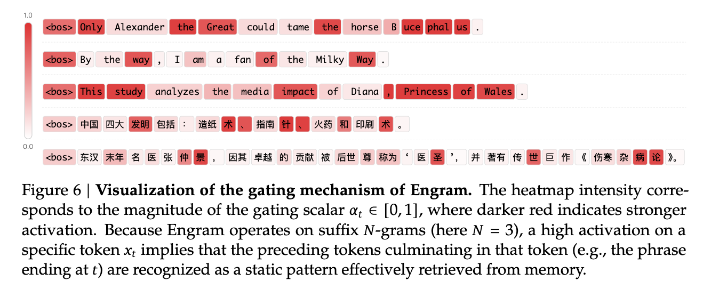
A larger gate lets more of the retrieved value contribute. It does not measure factual correctness, and this visualization does not prove that every useful phrase always gets a large gate.
Quick check: does a red “Great” mean only “Great” was looked up?
No. The suffix groups end there—for example, “the Great” and “Alexander the Great.” The displayed gate acts on the combined retrieved memory.
Read the architecture from the bottom upward.
Start with token groups, follow the hash arrows into embedding tables, then follow Concat into the learned projections. The hidden state joins the comparison path, controlling the memory contribution.
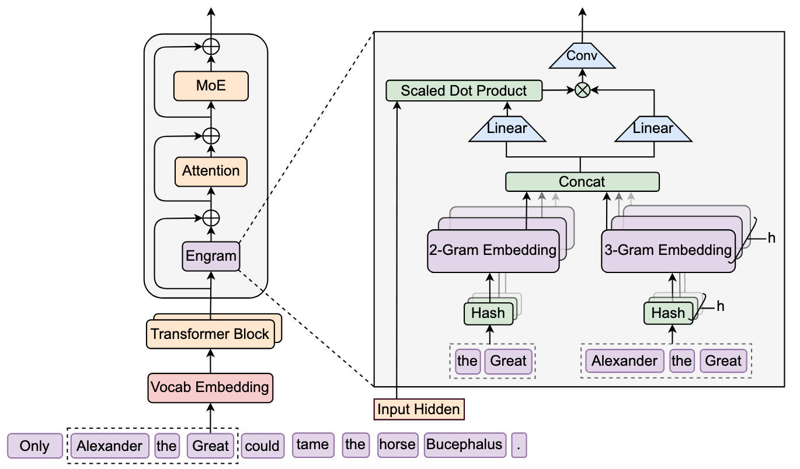
The Conv block belongs to the original Engram design. The DeepSeek implementation discussed in Part 5 uses direct gated addition without this convolution. These are related designs, not identical diagrams.
How much capacity should go to memory?
The README’s central question is how to split capacity between MoE computation and Engram memory. The left plot holds the study’s budget fixed and varies that split. Lower validation loss is better.
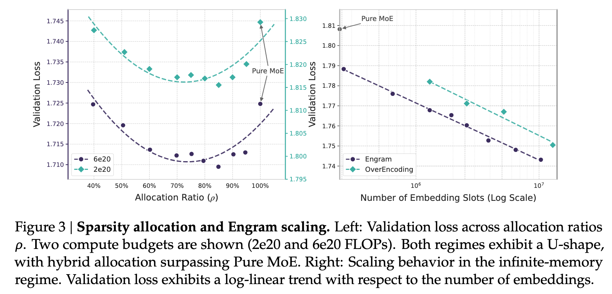
On the left, 100% means pure MoE. Moving left assigns more of the sparse parameter budget to memory. Both curves have their best region between the extremes: more memory is not automatically better. The two colored curves use different vertical scales.
On the right, more embedding slots reduce loss over the tested range. This is a separate experiment with growing memory capacity, not the same fixed-budget comparison.
Research task: what would you compare in our own experiment?
Compare a baseline with a memory-augmented model, then add a baseline with a similar total parameter budget. Keep data and evaluation fixed. Otherwise, extra parameters could explain a gain that we attribute to the memory mechanism.
4 / Open the pre-training benchmark table
Compare the MoE-27B and Engram-27B columns first. The README reports a comparison matched on total parameters and training FLOPs. Read the arrows: lower is better for loss; higher is better for the listed accuracy-style scores.
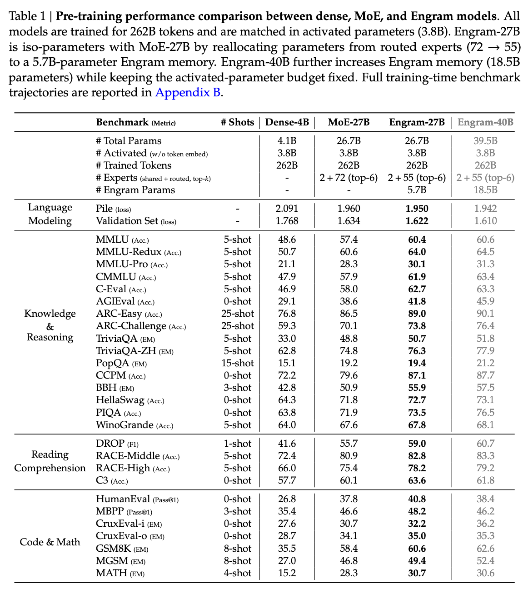
The reported improvements extend beyond knowledge questions to reasoning, code and math. These are the authors’ results under their training setup; our small reproduction has not established the same gains.
5 / Open the long-context results
The authors also test 32k-token contexts. LongPPL measures perplexity, where lower is better. RULER includes retrieval and other long-context tasks, where higher scores are better.
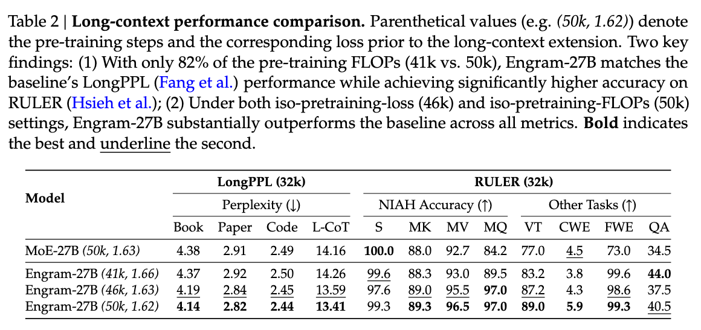
Compare the training conditions as well as the scores: the table includes different step counts and compute comparisons. The README’s proposed explanation is that local memory leaves more attention capacity for other dependencies. Treat that as an interpretation to investigate, not something the table alone proves.
The repository includes a mechanism demo.
The README provides engram_demo_v1.py, a standalone demonstration of the data flow. It uses placeholders for Attention, MoE and mHC. Running it is useful for learning the module; it does not reproduce the trained model or the benchmark tables.
Another README idea worth testing later: because token IDs determine the addresses, the system can prepare memory reads ahead of time. The reported low overhead for host-memory offloading depends on the tested system; it does not make memory access free.
Figures reproduced unchanged from deepseek-ai/Engram. Copyright notice and Apache-2.0 license retained. Saved README · Figure sources. Retrieved September 20, 2026.
Two tables, one array. What keeps them separate?
You do not need to write a whole model. We will inspect five lines from the official demo, change one operation, and see why it matters.
Give head A three rows and head B four rows. The implementation packs both into one seven-row array. Head A starts at global row 0. Head B starts at global row 3.
Both heads may request their own local row 1. That means global row 1 for A, but global row 4 for B. The offsets [0, 3] perform that translation.
This is an unchanged excerpt from MultiHeadEmbedding.forward in the official Engram demo. Here input_ids are already hash-row indices—do not confuse them with the original vocabulary token IDs.
def forward(self, input_ids: torch.Tensor) -> torch.Tensor:
shifted_input_ids = input_ids + self.offsets
output = self.embedding(shifted_input_ids)
return outputOfficial source · lines 320–324 ↗ · Saved source ↓
Line 2 adds each head’s starting offset. Line 3 reads those rows from the packed embedding array. The result contains one vector per head.
What if we remove the offsets?
In this toy run, A1 stores [0.2, −0.5] and B1 stores [0.6, 0.1]. Both heads request local row 1. Predict what the broken version will retrieve.
This browser exercise runs a small JavaScript equivalent with fixed arrays. It does not execute PyTorch or train a language model. The official code above remains unchanged.
Without offsets, both indices stay at 1, so both read A1. The code runs, but head B silently reads the wrong region. With offsets restored, the indices become [1, 4], retrieving A1 and B1.
This is an implementation bug, not the intended hash collision we discussed earlier. Collisions happen within a head’s assigned table. The offsets preserve the separation between heads.
“It runs without errors.”
One head is reading the wrong table.
Your review task: what should a test check?
Check that each shifted index falls inside that head’s own allocated range. For this example, A must use rows 0–2 and B rows 3–6. Checking only the output shape would miss this bug.
Download the tiny Python exercise ↓
Run it with python3 packed_lookup.py. This dependency-free teaching version lets you change the arrays and inspect the same address calculation. It is not the full official PyTorch module.
Why not make “New York” one token?
We can. A tokenizer could represent the whole phrase with one token. That can shorten the sequence. Engram takes a different approach: keep the token sequence and add memory lookups for groups within it.
One segmentation, or overlapping groups?
Consider these three toy tokens:
Another choice is [New] [York City], or one token for the entire phrase. A tokenization picks one sequence of pieces.
At York: look up New York.
At City: look up York City and New York City.
Engram can use those overlapping patterns at their respective positions. It does not need to replace them with a single vocabulary token.
What changes when we scale this up?
| Question | Add phrase tokens | Use Engram memory |
|---|---|---|
| Sequence length | Can become shorter when phrases merge. | The original sequence length stays the same. |
| Overlapping phrases | A tokenization chooses one segmentation. | Several overlapping groups can be looked up. |
| Where capacity grows | The vocabulary grows. In a standard language model, added tokens are also additional possible next-token outputs. | A separate memory table grows; the input/output vocabulary can remain unchanged. |
| Cost and compromise | More vocabulary entries and training coverage to manage; fewer sequence positions may save work. | Extra storage, lookup and gating work. Hashing bounds the table size but allows collisions. |
No automatic winner: this is an architectural trade-off, not evidence that Engram always beats a larger tokenizer. Compare prediction quality, memory use and runtime under matched budgets.
Does an n-gram have to be frequent?
No. An n-gram is any contiguous group of n tokens. Frequent patterns motivate the opening, but Engram’s mechanism also hashes groups that are rare. It does not first check a list of frequent phrases.
Source: Engram architecture: hashed n-grams and unchanged input/output vocabulary. Tokenization examples and the comparison are explanatory illustrations.
Optional reference · earlier detailed Engram walkthrough
DETAILED MECHANISM WALKTHROUGH · EARLIER RECORDING
READ · TRY · UNDERSTAND
N-grams, one small step at a time.
See why DeepSeek uses them, build a few yourself, then follow one into memory.
Explore in any order. Your completed checks are saved in this browser.
Give a familiar pattern a memory lookup.
DeepSeek uses short token patterns to retrieve learned information from memory. This gives the model a direct lookup alongside its transformer computations.
The memory module.
A group of consecutive tokens.
A vector is a list of numbers learned during training. The network uses these numbers; the table does not return a sentence about New York.
Which name refers to the memory module?
Include York, then look backward.
We are processing York in this example. It is the last token inside each group, even though the sentence continues.
The groups overlap. The number n is just the number of tokens in the group.
We pretend each word is one token. A real tokenizer can split words into pieces or include spaces and punctuation. The same grouping rule still applies.
Which 2-gram belongs to York?
What if the whole prompt is already available?
The causal rule still applies at each position. Even during prompt processing, City is excluded from York’s n-grams.
Reversing the order changes the pattern too: York · New and New · York are different 2-grams.
The groups move with the token.
Select City to see the windows shift right. Then select love to see what happens near the beginning.
Current position: York. Tokens to its right are excluded.
PAD fills a missing earlier position. At love, the 3-gram is PAD · I · love.
Padding does not borrow future tokens or wrap around the sentence.
Boundaries and all the groups in a sentence
The reference implementation also stops looking backward at masked image positions. Text across that boundary is replaced by padding for the lookup.
All unpadded 2-grams in this example are I · love, love · New, New · York, and York · City. At one position, however, Engram forms just one group of each length.
Calculate where to look.
Engram represents the group with token IDs. A repeatable calculation called a hash turns these IDs into a table row address.
Toy hash: (31 × first ID + second ID) mod 101
31 × 72 + 18 = 2250 = 22 × 101 + 28
Try reversing the IDs. Does the address change?
It calculates an address directly; it does not search every row for a similar phrase.
Different groups. Same memory address.
The n-gram is the input token group. Row 28 is a storage address. These are two different things.
Both calculations leave a remainder of 28, so both groups read row 28 and get its vector. They have not become the same n-gram.
Think of two people assigned the same locker number: different people, one shared locker. This accidental overlap is called a hash collision.
Why can it happen? This toy table has only 101 rows, but there are many more possible token pairs. Some pairs must share an address. Sharing a row does not mean the groups have the same meaning.
These IDs, vectors and hash are made up. “mod 101” means take the remainder after division by 101. DeepSeek uses multipliers, XOR and prime-sized table ranges instead.
What happens before hashing?
A fixed mapping merges token IDs whose decoded text normalizes alike, including some capitalization variants. Hashing uses these compressed IDs. The mapping reduces the ID space; it does not shorten the n-gram or remove positions.
The same compressed group produces the same addresses within one Engram module. Different modules can use different mappings to table addresses.
Eight routes for each group length.
Each n-gram length uses eight hash heads. A head here is one lookup route into its own table range.
Two groups that share a row in head 1 can reach different rows in head 2. The model combines all the retrieved vectors, so a collision in one head does not force the entire memory representation to match.
They do not guarantee unique entries for every phrase. These are hash heads, not attention heads.
3 group lengths × 8 heads = how many row lookups per position, in one module?
Same lookup. Different contribution.
The hash decides where to look. Training learns what numbers each row contains.
The retrieved pieces are combined and projected. A gate uses the model’s broader context to control how much of the resulting value is added.
Toy value, one residual branch. You control this slider; in the real model the gate is computed from the hidden state and retrieved key.
With fixed weights, the same pattern retrieves the same vectors in that module. Its contribution can still change with context.
Does a 4-gram limit the whole model to four tokens of context?
You followed a pattern into memory.
You identified the module, built a group, moved its window, calculated an address, counted the lookups, and distinguished local patterns from broader context.
Revisit any step ↑Sources: DeepSeek report §2.4.2 and the official implementation: build_compressed_token_map, NgramHashState.forward and Engram.forward. Examples are instructional.
Video transcript · exact narration
Engram gives the model a learned memory for short token patterns. An n-gram is the token group used to choose a memory address. The memory stores learned vectors, not paragraphs or a database of facts.
Take I love New York City. For this example, pretend each word is one token. While processing York, the two-token group is New York. The three-token group is love New York. Every group ends with York, the token being processed. City is still excluded.
Move to City, and all the windows move with it. The two-token group becomes York City. Near the start, there are not enough earlier tokens, so the longer groups use padding.
How does a group find its memory? Give New York the example IDs seventy-two and eighteen. Our toy hash multiplies the first ID by thirty-one, adds the second, and takes the remainder after division by one hundred and one. That selects row twenty-eight.
Now reverse the IDs. The same calculation selects row twenty-four. Token order matters. The hash calculates where to look; training learns the numbers stored at that address.
But a different pair, one and ninety-eight, also selects row twenty-eight. Watch the arithmetic: both totals leave the same remainder. These are still different n-grams. They simply share a memory address, so this one head returns the same vector. That is a hash collision.
Why can that happen? Our toy table has only one hundred and one rows, but many more possible token pairs. Some must share a row. Like two people assigned the same locker: same locker number does not mean the same person, or the same meaning.
Engram uses several hash heads. Two groups can collide in one head but reach different rows in another. Combining the retrieved vectors helps distinguish them. It does not guarantee that every possible group gets a unique representation.
DeepSeek uses eight heads for each group length: two, three, and four tokens. That is twenty-four row lookups at each position in one Engram module. These are hash heads, not attention heads. Our tiny hash was just a teaching example.
The retrieved vectors are combined, then projected into a key and a value. The key is compared with the model's current hidden state to calculate a gate. That controls how much of the value is added.
Here is a toy value. A gate of point two adds a small contribution; point eight adds a larger one. The same token group retrieves the same memory within a module, but context changes how much it contributes. Four-token lookups do not limit the whole model to four tokens of context.
And the addresses depend on token IDs, so they can be calculated early. Engram can fetch its vectors while other model computation runs. That is the whole path: form the group, calculate addresses, retrieve vectors, and let context control their contribution.
Implementation details behind the animation
Engram hashes compressed token IDs. For each module, the orders 2, 3 and 4 each have eight hash heads. Retrieved embeddings are concatenated and projected into keys and a value. The diagrams use illustrative IDs and vectors, not real model activations.
The official implementation normalizes the hidden state and key, forms a weighted dot product, then applies a signed square root and sigmoid to obtain the gate. Each residual branch has its own key and gate; the animation draws just one branch. The value is multiplied by the gate before being added to that branch’s hidden state.
Same lookup means the same compressed token pattern within the same module and fixed model weights. Hash collisions are possible. This memory contains learned embedding vectors, not a database of documents or guaranteed factual answers.
The paper describes two Engram modules at layers 1 and 14 (zero-indexed). Deterministic addresses allow host-memory prefetching; transfers for the first module overlap computation in the first Transformer block. This is an overlap opportunity, not a claim that every transfer is fully hidden.
Source: §2.4.2 ↗ · official inference implementation, Engram.forward
V4.1 PAPER · §2.4.3 · SPECULATIVE DECODING
How DSpark drafts and verifies several tokens
Ordinary generation chooses one token before it can calculate the next token’s distribution. DSpark uses a small drafter to propose several next tokens, then asks the main model to check a selected number of them together. The draft can be wrong, so checking it is essential before accepting its tokens.
See why target decoding waits on each token
For an autoregressive target model, the next distribution is conditioned on the already committed prefix. After sampling one token, its KV state and the prefix change, then the model can score the next position. Hardware can parallelize the matrix work within one forward pass, but it cannot know the sampled next token before that pass finishes. Long answers therefore repeat a latency-sensitive decode loop.
This is a dependency bottleneck, not evidence that one target pass equals one fixed amount of wall-clock time. Batch size, context length, kernels, cache state, and serving load all matter.
See how DSpark drafts five positions together
The V4.1 report describes a drafter with three Transformer blocks and a sliding attention window of 128 tokens. One pass produces base logits for five draft positions in parallel. “Parallel” here means the five position representations are computed together; it does not mean the proposed words are assumed independent.
The lightweight Markov head models dependencies among the draft tokens. In the released reference, each sampled proposed token contributes a Markov embedding that adjusts the next position’s logits. That gives later proposals information about earlier proposals without rerunning all three draft blocks for every position. The confidence head has a different job: it predicts a conditional acceptance probability for each position.
How confidence estimates guide draft length
Let aⱼ mean the confidence estimate for position j, conditional on the earlier proposed positions being accepted. The scheduler can turn these into an estimated probability that the whole prefix through j survives: Sⱼ ≈ a₁ × a₂ × … × aⱼ. A low value late in a draft can make extra verification work unattractive. The report says DSpark combines these estimates with profiled engine-throughput curves to choose a verification length dynamically for each request under the current system load.
Change the estimates; inspect expected accepted draft tokens
Illustrative arithmetic only. The sliders are invented confidence estimates. For each candidate length L, the widget shows E[AL] = Σj=1L Sj: the expected number of accepted draft tokens before any correction. It divides this by the explicitly invented cost CL = 1 + 0.45L arbitrary units (one fixed unit plus 0.45 per verified position). Neither formula is DSpark’s production scheduler.
| Prefix | Conditional estimate | Survival Sj | Expected E[AL] | Cost CL | E[A] / C |
|---|
Confidence is a learned forecast of acceptance, not a certificate that a token is correct. The product is an estimate based on conditional forecasts, not an observed verification result. The displayed E[A] excludes correction tokens and any bonus token a particular sampling procedure may generate after rejection. A real serving policy also accounts for target-model work, queueing, request shape, the sampling rule, and measured engine profiles. So DSpark does not imply a free five-times speedup.
How proposed tokens are checked before acceptance
The drafter produces tokens from a draft distribution; the target model evaluates the proposal. A correct speculative decoder must use an acceptance-and-correction procedure consistent with the target sampling method, commit only the verified prefix, and resume from the corrected state after a rejection. A high confidence estimate cannot replace that procedure.
Run a deterministic match-prefix illustration
This button compares two fixed word lists and commits their shared prefix. It makes the control flow visible, but it is deliberately not a sampling-distribution-preserving speculative-decoding algorithm: it has no probability ratios, rejection correction, target sampling, or model state.
When DSpark is trained and which weights change
Unlike the jointly pretrained MTP module discussed for DeepSeek-V3, the report says V4.1 introduces DSpark in a dedicated stage after backbone pre-training. That stage trains only DSpark while the backbone is frozen. During post-training, DSpark continues alongside the backbone, but gradients from the DSpark objective do not propagate into the backbone. The stated purpose is to keep the drafter aligned with the evolving policy while avoiding DSpark-objective updates to backbone parameters.
The official minimal inference repository exposes a DSpark forward path, including a block-size configuration and Markov/confidence heads, but its README says generation itself is plain autoregressive sampling. It is useful for studying tensor structure; it is not the production verification scheduler.
Sources: DeepSeek-V4.1-Flash report, §2.4.3 DSpark · source and teaching-scope ledger.
V4.1 PAPER · §5.1.1 · BUILDING TRAINING TASKS
How DeepSeek constructs tasks that are worth training on
An agent’s training task needs more than a question. It needs a working environment and a way to distinguish a real solution from an accidental shortcut. Otherwise, a higher reward can mean the agent got better at passing a bad check.
A precise user request.
A runnable starting state and tools.
Checks for the requested behavior and what must stay intact.
The report describes tasks as a problem–environment–verification triplet. Its coding pipeline checks whether a project can run and be verified, builds an isolated environment, has multiple agents attempt it, and separately inspects and repairs the task. Difficulty and correctness both matter.
“Make shipping free for orders of $50 or more.”
In our invented shop, shipping currently costs $5. The requested change is free shipping when the subtotal is at least $50. Smaller orders should still cost $5. We will use a tiny JavaScript function so the entire verification problem is visible.
function shipping(subtotal) {
return 5;
}This is our teaching task, not an example reported by DeepSeek. There is no training job or LLM running in this widget.
One passing example is not the whole requirement
Suppose the evaluator checks only a $60 order. Returning zero for every order passes that check. But it also makes a $20 order free, which the user never asked for.
return 0;Why the paper asks for two kinds of evaluation points
A $60 order should become free. The starting implementation fails this requirement; a correct change makes it pass. The $50 boundary needs its own check too.
A $20 order should still cost $5. This behavior already works and must keep working after the change. It catches the “make everything free” shortcut.
These three cases exercise the requested change, its boundary, and one behavior that must stay intact. They do not exhaust every possible subtotal. A real application might also specify currencies, rounding, invalid input, discounts, or other existing behavior. Tests have to follow those requirements, not silently invent them.
A failed attempt can reveal a broken environment
The report’s independent quality inspection looks for environment problems, factual mistakes, mismatches between the description and checks, and exploitable evaluation. It removes solution leakage during environment construction and sends failed inspections through repair and verification again.
- ConstructProblem, runnable environment, checks.
- AttemptDifferent agents try the task.
- InspectExamine both the task and the attempts.
- RepairFix flaws, then verify again.
If every agent fails because a dependency cannot install, the task is not necessarily an excellent hard problem. If every agent succeeds by returning a constant, it is not necessarily evidence of strong reasoning. Those outcomes tell us to inspect the environment and evaluator.
Does the report claim architecture research no longer matters?
No. In §5.1, the authors describe keeping their post-training optimization recipe conventional while focusing on tasks, environments, and data. That statement concerns this post-training work. The same report introduces architectural changes elsewhere. It does not establish that architecture improvements are exhausted.
Primary source: DeepSeek-V4.1-Flash §5.1.1, Large-Scale Agent Task Synthesis. The shop function and browser tests are original illustrative examples. Source notes.
Next: interpret the paper’s measured results →10 · READ A REAL PAPER RESULT
What V4.1’s benchmark comparison tells us
Table 1 asks a concrete question: does the finished V4.1-Flash base model retain strong capability while using its new long-context efficiency design? It compares three finished base models in DeepSeek’s shared internal evaluation setting. Read the scores as evidence about the final package, then keep separate the question of which design choice caused them.
The V4.1-Flash report does not publish a numerical, one-change-at-a-time architecture ablation for CSA2, FP4 KV caching, or SWA Bounded Replay. Section 4.3 instead gives Table 1: a comparison of DeepSeek-V4-Flash-Base, DeepSeek-V4-Pro-Base, and DeepSeek-V4.1-Flash-Base. We will read that actual core-paper result as a bundled architecture-and-training comparison, not call it an ablation.
Do fewer active parameters always mean lower scores?
Can V4.1-Flash reduce its long-context serving footprint while retaining or improving base-model capability? The architecture is designed around CED, CSA2 cross-layer cache reuse, FP4 main KV caching, and other changes. Table 1 asks whether the final package performs competitively against earlier DeepSeek base models; it does not tell us which component caused each score.
PREDICT BEFORE READING
Predict whether every benchmark score must fall
Predict one metric where V4.1-Flash improves over V4-Flash and one where it may not. Then separate the observed rows from any explanation for them.
Reveal the reported pattern
V4.1-Flash is higher on MMLU-Pro, BigCodeBench, HumanEval, MATH, and LongBench-V2 in the selected rows below; it is lower on MGSM. The reveal is deliberately mixed: “the new model wins” is too coarse. The paper also says a score gap of at most 0.3 counts as the same level, so its LongBench-V2 difference of 0.5 is narrow even by its own convention.
Which model and training choices changed?
Table 1 explicitly supports comparability of the evaluation procedure. It does not make the training histories identical. The report itself attributes results in part to substantial pre-training data-curation improvements and notes that V4.1 introduces native multimodal training.
Read selected results from Report Table 1
| Reported Table 1 row | V4-Flash-Base | V4.1-Flash-Base |
|---|---|---|
| Activated parameters | 13B | 8B / 16B |
| MMLU-Pro (EM), 5-shot ↑ | 68.3 | 74.1 |
| BigCodeBench (Pass@1), 3-shot ↑ | 56.8 | 60.6 |
| HumanEval (Pass@1), 0-shot ↑ | 69.5 | 79.4 |
| MATH (EM), 4-shot ↑ | 57.4 | 61.1 |
| MGSM (EM), 8-shot ↑ | 85.7 | 80.2 |
| LongBench-V2 (EM), 1-shot ↑ | 44.7 | 45.2 |
The activated-parameter row is not a score and the 8B / 16B notation has a context: the report describes 8B activation during prefill and 16B during decode. Do not average it, and do not infer end-to-end cost from it alone.
Changed the architecture AND the training data.
Me giving all the credit to my favorite layer.
Which claim can Table 1 support?
V4.1-Flash-Base scores 74.1 on MMLU-Pro; V4-Flash-Base scores 68.3. Several architecture and training choices changed.
Choose an answer to see the explanation.
WHAT THE EVIDENCE SUPPORTS
Within DeepSeek’s reported common evaluation setting, V4.1-Flash-Base exceeded V4-Flash-Base on several selected knowledge, code, math, and long-context rows while using 8B activated parameters in prefill and 16B in decode versus 13B for V4-Flash-Base. It also scored lower on MGSM. This supports the narrow descriptive claim that the final V4.1 package had a strong, but non-uniform, reported capability profile alongside its stated efficiency design.
WHAT IT CANNOT ESTABLISH
It cannot assign the MMLU-Pro gain, the MGSM drop, or any other row to CED, CSA2, FP4 KV, Engram, parameter count, or data curation individually. It does not report seeds, confidence intervals, or run-to-run variance for these table rows. It is also an internal evaluation framework, so the table alone cannot establish external generalization. Architecture explanations are hypotheses until a matched intervention tests them.
Define an FP4-versus-FP8 follow-up experiment
For one fixed checkpoint, does serving the main KV cache in FP4 instead of FP8 measurably change long-context quality?
Run the identical checkpoint, prompts, decoding settings, sequence lengths, and hardware with both cache precisions. Keep the backend configuration as comparable as possible and document precision-specific kernels. Repeat on representative long-context tasks and on the same sampled prompts.
Pre-register task accuracy and loss as quality metrics; log KV bytes per token, latency, and failures separately. Measure short and long contexts because a cache trade-off may appear only at length.
Report paired differences and their spread. Call any conclusion limited to this fixed checkpoint: it tests inference-time cache precision, not whether quantization-aware training would change the outcome.
This is a proposed experiment, not a run performed in this course.
Primary source: DeepSeek-AI, “DeepSeek-V4.1-Flash: Pushing the Limits of KV Cache Compression” ↗, §4.3.2 and Table 1, PDF pp. 23–24. Architecture context: §2.1–2.4, PDF pp. 7–14. Vendor-reported; no experiment in this lesson was run.
02 / OUR STARTING IMPLEMENTATION
Follow one forward pass through our small attention model
The architecture above is our destination. To understand its memory choices, first inspect a model small enough to follow in a few lines. This is the actual NumPy implementation used by the upcoming cache experiment.
What exists today: one causal attention layer with random, fixed weights. It accepts token IDs and returns next-token scores. It has no feed-forward block, normalization, or training loop, so it is an attention test model, not a complete DeepSeek reproduction or a trained chatbot.
Each position starts with a 32-number vector
The toy vocabulary has 256 IDs. For [12, 37, 9], the code selects three token embeddings and adds the embeddings for positions 0, 1, and 2. The token IDs in this experiment are synthetic; we are not using a text tokenizer here.
x = E[tokens] + P[:len(tokens)]Attention combines information from visible positions
The code transforms those vectors into queries, keys, and values. A query scores the keys; softmax turns those scores into weights for mixing the values. The causal mask blocks future positions.
q, k, v = x @ WQ, x @ WK, x @ WV
scores = q @ k.T * scale
scores[np.triu_indices(len(tokens), 1)] = -np.inf
hidden = softmax(scores) @ vRead the scores at the final position
The output projection produces 256 scores per position. For this three-token prefix, the last row scores what could come after token 9. With untrained weights, those scores are not useful language predictions. They are still useful for checking that two implementations perform the same calculation.
logits = hidden @ WO @ E.T
# logits[-1] contains the next-token scores.Excerpts from our runnable teaching implementation: Download Python code · Experiment configuration.
This fixed-weight model isolates the attention calculation. Next, we add the missing transformer components in a separate PyTorch baseline and train it. Afterward, we return to the simpler NumPy model to isolate cache behavior.
Train the small baseline →BUILD AND TRAIN · OUR FIRST LEARNED MODEL
Train a small language model before changing its architecture
The previous model showed where the numbers flow. Now we need numbers that have actually learned something. Otherwise, changing its memory can only tell us about mechanics—not whether it predicts better.
We train a small causal transformer on a synthetic language of commands. This is our experimental starting point, not a DeepSeek checkpoint or a test of general language ability.
Read or edit the video narration
We have traced the architecture. Now we need a model we can actually train, before testing whether a new mechanism helps.
Our starting point is a small causal transformer. Two attention blocks, feed-forward layers, and next-token prediction. No Engram or experts yet.
We train it on a tiny language of commands about shapes and colors. Training and validation use different sentences, but share the same grammar.
Here is the recorded run. Training loss measures prediction on the training sentences. Validation loss measures separate sentences without updating the weights.
Compare against simple guessing too. A word-frequency baseline predicts common words without reading the context. Beating it is more informative than beating uniform guessing alone.
Now repeat the run with another training seed. Keep the data split and training budget fixed. This gives us a baseline to compare future architecture changes against.
Layer normalization · attention · residuals · MLP↓Final normalization → next-token scores
Predict the next word in a command
Our sentences combine shapes, colors, directions, and actions. We generate the data ourselves, split complete sentences into training and validation sets, and save both lists so you can inspect them.
move the red circle left once then paint it blueThe validation sentences are different, but they use the same small grammar and familiar words. Success here means learning this controlled distribution. It does not establish general language understanding or out-of-distribution reasoning.
Each position predicts the token immediately after it
<bos> move the red circlemove the red circle leftAt “red,” the target is “circle.” The causal mask prevents that position from reading “circle” in the input. We can score all these next-token predictions in one forward pass while keeping future words hidden from earlier positions.
What would go wrong without the causal mask?
An earlier position could read the word it is supposed to predict. A low training loss would then be misleading: during real generation that future word is not available. The code checks that changing later tokens leaves earlier predictions unchanged.
Score predictions, calculate gradients, take one update
# Simplified training loop; full runnable source below.
logits = model(inputs)
loss = cross_entropy(logits, next_tokens, ignore_padding=True)
optimizer.zero_grad()
loss.backward()
optimizer.step()The loss penalizes putting too little probability on the actual next token. Gradients tell the optimizer how the current weights contributed to that loss. The update changes the embeddings, attention, and feed-forward layers together.
Validation uses the same scoring rule on held-out sentences, with no optimizer update. We use it to check whether improvement extends beyond the training sentences.
API reference: PyTorch cross-entropy loss ↗. The snippet above is teaching pseudocode.
Did the predictions improve on held-out sentences?
Read the validation curve first. Lower cross-entropy means the model assigns more probability to the observed next tokens on average. It is not an accuracy percentage; a value of 1 does not mean “100% wrong.”
Loading the saved CPU run…
The slider replays recorded measurements. It does not train a model in your browser. Values come from one seeded CPU run; they are not multi-seed research results.
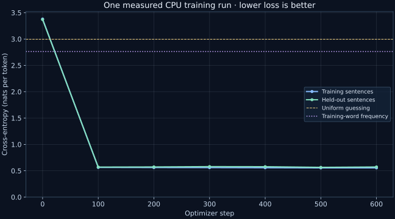
What happened: validation loss fell from 3.370 to 0.572. Most improvement happened by step 100. More updates did not steadily improve it: step 500 scored 0.565, while step 600 scored 0.572. We report the preselected final step rather than silently selecting the best-looking checkpoint.
Why compare with a word-frequency baseline too?
Uniform guessing gives every vocabulary item equal probability. A word-frequency baseline can already improve on that by predicting common words more often, without reading the preceding context. Beating only uniform guessing would be a weak result.
The same prompts, before and after training
These are saved greedy continuations, not hand-written model answers. A plausible example is useful to inspect, but the validation set is stronger evidence than a few selected generations. The dataset permits multiple valid continuations, so there is not always one correct next word.
Repeat the run with a different random seed
Download the experiment, run the reference configuration, then change only the model/training seed while keeping the data split fixed. Compare final validation loss and the generated examples. This tests whether our result depends strongly on one initialization and training order.
See the README in the downloadable experiment for the exact run command.What should stay fixed in the comparison?
Keep the training and validation sentences, architecture, number of updates, batch size, and learning rate fixed. Change the training seed only. If you also change the data split or model size, you can no longer attribute the difference to that seed.
We now have a model whose weights have been trained. Next, isolate generation mechanics: understand cache reuse, then measure it in the separate, simpler NumPy model. Later architecture comparisons can build on this trained baseline.
Why generation can reuse earlier keys and values →04 / ATTENTION AND MEMORY · MEASURE OUR STARTING POINT
How context length changes KV-cache memory and generation time
We have seen how the cache avoids recomputing earlier keys and values. But it also keeps those tensors in memory. Before studying DeepSeek’s compressed and shared caches, measure this simpler implementation so we have a concrete reference.
Need the setup? Our model · How cached generation works. The measurements below are from the untrained teaching model, not DeepSeek.
What changes when the context becomes twice as long?
During cached decoding, each earlier position keeps a key and a value so the next token can reuse them. We will measure tensor bytes directly, then measure runtime separately.
Make two predictions before reading the result
Choose both predictions first.
The cache stores intermediate keys and values, not extra tokens or facts. In this one-layer float32 model, every saved token uses 32 key numbers plus 32 value numbers: 64 × 4 bytes = 256 bytes. Real models multiply this by their layer and head structure.
Simplified pseudocode; the downloadable source includes the output projection and returns the updated cache.
def cached_step(token, position, cache):
x = token_embedding[token] + position_embedding[position]
query, key, value = x @ W_query, x @ W_key, x @ W_value
keys = append(cache.keys, key)
values = append(cache.values, value)
return attention(query, keys, values)Code review question: after each forced token is appended, do cached and full-prefix decoding score that exact same sequence at the same position? Check every step: one matching prefix output can still hide an off-by-one position or cache-index bug.
Measured locally on CPU
16 stepsCached decode
16 steps
All 64 forced-step logits matched the corresponding full-prefix outputs within 1e-5. The largest measured error was 4.66e-9.
Prefill is measured separately in the raw results; it is excluded from both decode timers.
Download the Python experiment ↓ · Configuration ↓ · Raw measured results ↓ · Pre-audit provenance ↓
KV tensor storage doubled whenever context doubled, exactly as the tensor shape predicts. The decode timer starts from an already-prefilled prefix for both paths, then scores the same appended forced tokens. The cached path stays near 0.36–0.38 ms here while full recomputation rises with context; this small CPU result is noisy and does not promise a scaling factor on another implementation or machine.
Deterministic untrained one-layer NumPy model · CPU · float32 · seven timed repetitions after two warmups · same forced continuation tokens and output positions for both paths. This tests cache mechanics, not model quality. KV bytes are exact NumPy key/value tensor storage only. Python tracemalloc peaks are recorded separately and are not total process memory.
Me: “Just double the context.”
Also me, when the cache doubles:
Now we can ask what to change. DeepSeek’s architecture compresses global memory and shares it across selected layers. The next lesson explains the sharing mechanism; our tiny benchmark has not implemented it yet.
Continue to shared attention caches →09 / BUILD THE MECHANISM
Run a tiny Engram.
Change the input. Inspect the memory. Test a collision.
Every address, vector and gate below is calculated by runnable JavaScript in your browser. Start with the sentence, then follow its numbers through the module.
The tables and projections use fixed, seeded random numbers. We have not trained a language model. This lab demonstrates the data flow; its outputs have no learned meaning.
Which token are we processing?
Click a token. Each group includes that token and its immediate predecessors. Future tokens stay out; missing earlier tokens become PAD.
Choose a group to inspect below. All three group lengths still feed the module. PAD uses ID 0; this toy tokenizer ignores capitalization when assigning IDs.
Try it: click City, then I. Watch the groups move and padding appear.
A calculated address reads an actual table row.
The previous diagram used handpicked vectors. Here the rows contain reproducible random numbers, so row 28’s numbers differ. Every head has its own table for each group length. “Row 5” in head 1 is a different storage location from “row 5” in head 2.
Try it: switch from eight heads to one. The concatenated input and projected key/value change. Within a fixed configuration, repeating the same input gives the same result.
Change the hidden state—not the stored memory.
We hold the retrieved key and value fixed while rotating a hypothetical hidden-state vector. Here, alignment with the key opens the gate more.
Output = hidden state + added contribution:
See the exact gate calculation
Our toy rule is gate = sigmoid(3 × cosine(hidden, key)). The vectors’ angle determines cosine similarity; sigmoid turns that score into a number between 0 and 1.
We choose this hidden state directly. It is not produced from your sentence by a Transformer. DeepSeek’s gate uses its actual hidden state, learned scaling, normalization and a signed square root; this simplified gate teaches the dependency, not that exact implementation.
How much can more heads distinguish?
We enumerate 256 distinct pairs: every combination of IDs 1 through 16. For each pair, record its row in one head, or its sequence of eight row addresses.
An “address pattern” is the full list of row addresses across the selected heads. Two groups sharing that whole list retrieve the same vectors in this toy module.
A real collision from this run
This comparison gives eight heads eight times as many table entries. It isolates the mechanism; it does not prove that more heads are better at a fixed memory budget, or that language-model accuracy improves.
What this experiment can—and cannot—tell us
With very small tables, even eight heads can share the complete address pattern. More heads do not guarantee uniqueness. Our deliberately simple polynomial hash also has structure that a production hash need not share.
Distinct address patterns are an address-level measurement. They do not prove that projected vectors remain distinct, that the model learned useful features, or that it predicts text better. Those require training and separate measurements.
Small enough to read. Ready to change.
The core has no packages, server calls or AI-generated answers at runtime. It tokenizes the toy sentence, hashes the groups, reads seeded tables, projects the vectors and calculates the gate.
Download the runnable JavaScript core ↓Run the same calculation locally with Node.js
const E = require('./engram-lab-core.js');
const tokens = E.tokenize('I love New York City');
const groups = E.groups(tokens, 3); // York is position 3.
const memory = E.retrieve(groups, 8, 101);
console.log(memory.groups); // Every address and retrieved vector.
console.log(E.contextGate(memory.key, memory.value, 0));
console.log(E.contextGate(memory.key, memory.value, 180));
console.log(E.collisionExperiment(17));Save this snippet as run.cjs beside the downloaded file, then run node run.cjs.
How this differs from DeepSeek
We split words on spaces, assign toy IDs, use a polynomial hash and three-number vectors, and inspect one residual branch. There is no trained tokenizer, compressed-token mapping, actual DeepSeek hash, production-size table or language-model training here. The learned tables in a real model are replaced by fixed random initialization.
The preserved mechanism is: causal n-gram groups → several table lookups → concatenation and projection → a context-dependent gated addition.
Next research step: train these table rows and projections on a tiny prediction task, then compare held-out results against a matched baseline.
OUR RESEARCH · LIVE EXPERIMENT NOTEBOOK
Can n-gram memory adapt a frozen language model?
Take a pretrained language model. Keep its original weights fixed. Can we teach it a task by training a small memory module, and how does that compare with LoRA?
Work in progress · Results below are our measurements on SmolLM2-135M, not DeepSeek benchmarks. Our adapter is Engram-inspired; it is not an exact reproduction of the paper.
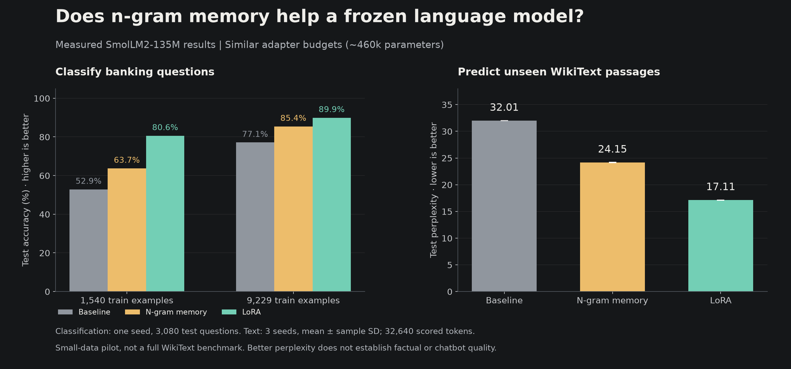
Same pretrained model, two ways to adapt it
Frozen SmolLM2-135M
├─ LoRA: train small updates in attention layers
└─ N-gram memory: train tables + the network that reads them
Original model weights stay fixed in both cases.LoRA has 460,800 trainable adapter parameters. Our memory module has 460,352. It reads 2-token and 3-token groups through two hash heads each, then injects a gated memory contribution before the eighth Transformer block. This compares two complete adaptation designs; their placement differs as well as their mechanism.
Read a banking message and choose its category
“I am still waiting on my card?” → Card arrival
77 possible categories · real BANKING77 customer questionsAll three methods train the same kind of classification head, with identical initialization. The baseline trains only that head. LoRA and memory also train their adapters. We compare 1,540 training examples with 9,229; each uses a separate 770-example validation set and the official 3,080-example test set.
| Method | 1,540 training examples | 9,229 training examples |
|---|---|---|
| Frozen model + classifier | 52.86% | 77.14% |
| LoRA + classifier | 80.62% | 89.94% |
| N-gram memory + classifier | 63.73% | 85.42% |
LoRA wins both comparisons. Memory improves over training only a classifier, but that does not establish an advantage over LoRA. Each method received four epochs and the same two learning-rate choices; validation selected the checkpoint before test scoring.
Does the trained memory actually contribute?
In the larger run, Engram scores 85.42%. Disabling its adapter drops accuracy to 55.49%; shuffling its memory rows drops it to 71.04%. Both keep the classifier trained with the adapter, so neither is a replacement for the separately trained baseline.
Six test messages exactly match normalized training text in the larger split. Excluding them gives 77.10% baseline, 89.92% LoRA, and 85.39% Engram. The ranking stays the same.
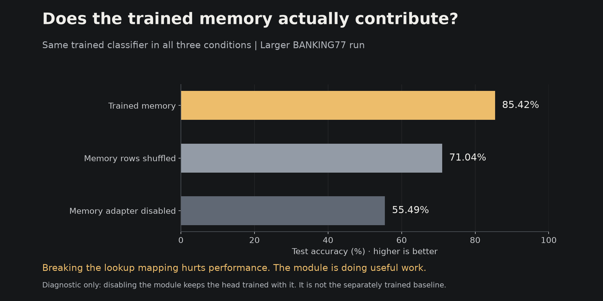
Explore the measured results and checks ↗ · BANKING77 source ↗
Keep the language model’s normal next-token output
SmolLM2 is an autoregressive language model. For this experiment, we keep its original output vocabulary and train on real WikiText-2 passages. There is no 77-category classification head. The original model, LoRA model, and memory model predict unseen text and continue the same prompts.
Prompt: “The history of artificial intelligence”
Original model → saved continuation
LoRA → saved continuation
N-gram memory → saved continuationThe first pilot uses 512 blocks of 256 tokens for training, 64 validation blocks, and 128 test blocks from the official separate splits. Both adapters get two epochs and two learning rates. We select by validation loss, then report test perplexity: lower means better average probability assigned to the real next tokens. This is a bounded pilot, not a full WikiText benchmark.
Three completed runs (seeds 42, 43 and 44) average 32.01 perplexity for the original model, 17.11 for LoRA, and 24.15 for n-gram memory. The training, validation and test text stays fixed across these runs. Lower is better: both adapters improve next-token prediction, and LoRA performs better here. The report includes every continuation from the fixed prompt list, including weak or repetitive outputs.
Can we switch between finance and code memories?
We trained separate n-gram modules for real FiQA financial discussions and CodeSearchNet Ruby functions, while keeping SmolLM2 and its language-model output head frozen. Each domain had 65,536 training tokens, separate validation and test text, and three training seeds. Code repositories were kept separate across splits. These are custom text-prediction tests, not the original datasets' retrieval benchmarks.
| Loaded module | Financial text | Code |
|---|---|---|
| No module | 31.53 | 23.44 |
| Finance memory | 30.42 | 23.25 |
| Code memory | 31.75 | 19.64 |
The matching specialist improves predictions. Switching finance → code → finance restores exactly the same predictions. Here we swap the complete module: its tables and the learned network that reads them. The tokenizer stays unchanged, and we choose the domain manually.
Our hypothesis did not beat the baseline
Matched small LoRA adapters scored 26.78 on financial text and 13.31 on code, outperforming n-gram memory. Larger n-gram tables did not improve this training run: 30.56 on finance and 19.89 on code. LoRA also won within the frequent-token-group buckets. N-gram adaptation disturbed general text less, but also learned less; we have not established a better retention trade-off.
What happens if we switch only the tables?
A separate one-seed diagnostic put the code tables into the finance reader. Code perplexity was 23.29, compared with 19.64 for the complete code module. The specialty is not carried entirely by the tables. A shared reader explicitly trained with multiple tables is a motivated next experiment; we have not run it yet.
More rows cost storage, even when lookup count stays fixed
Our small and large modules contain 460,352 and 1,843,392 parameters. Their saved files are 1.84 MB and 7.38 MB. Both retrieve four vectors per token, so increasing rows does not enlarge the reader's matrix operations. However, our dense AdamW implementation uses more gradient and optimizer memory and performs more table-update work. Peak training allocation was approximately 882 and 904 MiB. Shared GPU contention prevents a clean speed claim.
32 training trials and all 24 selected-module evaluations completed. This is a small frozen-model adaptation study, not a reproduction of DeepSeek pretraining or evidence of reliable financial advice or executable code. Prior pretraining exposure is unknown. Finance documents may be related across splits despite duplicate filtering.
Experiment protocol · Results and cost explanation · Recording script · Raw measured results
Test usefulness, cost and what breaks
- Repeatability: text and swappable-specialist runs with seeds 42, 43 and 44 are complete.
- Verifiable generated answers: add held-out questions with automatically checkable answers.
- Retention: general-text checks are complete. A comparison at equal task improvement is still needed.
- Cost: report trainable parameters, adapter bytes, memory, training time and generation speed.
- Swapping: complete-module restoration passed. Next, train one shared reader with multiple switchable tables.
The completed comparisons above establish bounded prediction and swapping results; shared-reader training and verifiable answer tests remain future work. The GPU is shared, so timing measurements are affected by contention. Current generation recomputes the full prefix for every method; it does not measure optimized KV-cache decoding. Transfer between different model backbones is a separate, untested question.
Keep the article, code and evidence together
This course is the main research write-up: question, mechanism, setup, results, failures, and runnable code. Once the experiments are stable, we can produce a PDF report and a short post linking back here. We are testing a task-adaptation approach, not claiming to have invented n-gram memory.
EXTRA / MEMORY CALCULATOR
Calculate how cache sharing changes storage
Before training anything, isolate the storage question. Imagine eight layers whose global caches would otherwise have equal size. Change how many separate cache owners they use.
in this simplified calculation
Calculated, not measured. Equal-sized caches; excludes model weights, local KV, compression differences, and runtime overhead. This is not DeepSeek’s reported memory reduction.
How much sharing can the model tolerate?
Storage arithmetic cannot answer that. A useful next experiment would train matched small models with different sharing schedules, then compare held-out loss and memory under the same training budget.
COURSE CHECKPOINT
Review the architecture and choose your next experiment
You have worked through how V4.1 stores information, processes tokens, and checks proposed outputs. Use this checkpoint to review those ideas, then choose one small experiment.
KV caches hold per-input attention state. Compression, sharing, selection, and FP4 change storage or retrieval constraints; they do not share layer outputs.
LEARNED COMPUTATIONExplain how residual streams combinemHC mixes residual streams with learned coefficients. Single-Pass shifts input-mix timing; exact kernel fusion is a separate execution optimization.
VERIFICATIONExplain what the benchmark comparison supportsA finished-model comparison can describe the package’s reported scores. It cannot isolate one architecture component when data, training, and model choices changed together.
TRY AN EXISTING LAB
Pick one small mechanism to inspect
Calculate cache-sharing arithmetic, run the tiny Engram data-flow lab, or inspect the recorded trained baseline. Each has a declared scope; none builds the full V4.1 model.
Self-check: are cache, model weights, and attention the same thing?
No. Model weights are learned parameters reused across inputs. A KV cache is temporary state computed for the current sequence. Attention uses a query to score cached keys, turns those scores into weights, and combines cached values. The cache is what attention can read; it is not the weights or the attention output.
Upcoming lessons: attention-sharing training, pretraining data, and reasoning-effort control from the V4.1 report. Our small baseline already demonstrates a training loop; reproducing full DeepSeek training remains beyond the work shown here.